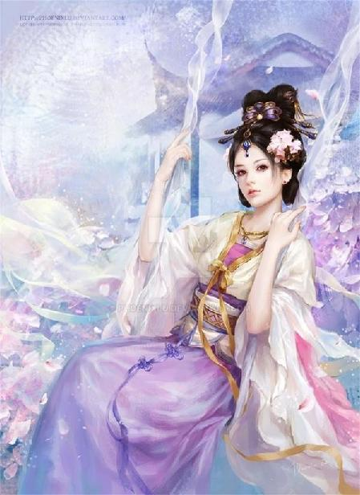

第88集·图穷匕现
唐国篇（12）
出版日期：2020-06-07
【本集内容简介】
藩镇、周族、佛门、内宦……聚集净住寺，图谋刺程，正事未成，居然已经内讧连连，令程宗扬大为惊叹……
黎锦香心防难解，说出童年旧事。而此刻安慰美人的方法，或许只有……
唐皇相召，御弟作陪，金殿设宴，程侯爷左等右等主人却不肯来，干脆一通豪吃，风卷残云差点没把桌子啃下。
辞宫归途中……终于图穷匕见！与此同时，程宅内院遭袭！
※ ※ ※ ※ ※

封面人物：安乐公主
书房内，一名青衣小厮侧着身子，小心翼翼地坐在椅上。他满身风尘，怀里还抱着一双鞋子，神情忐忑不安，有种做梦般的不真实感。
周围的架子上堆满了书卷——虽然里面有很多还是没来得及用线穿起来的卷宗，但在他看来都一样。地上铺着精致的白色藤席，他进来时生怕踩脏席面，偷偷脱了鞋子，揣到怀里，但还是留下了一行脚印。
旁边的漆几色泽乌亮，上面摆放着蓝田玉雕刻的笔筒、笔洗、笔架，还有一块玄黑色嵌满金星的砚台，一只装满朱砂的漆盒，一叠雪白的纸张。
看到一名衣着华丽的贵公子进门，罗令立刻站起身，叉手施礼，有些慌张地说道：“大……大东家。”
程宗扬莞尔道：“坐吧。还没吃饭吧？张恽，准备些酒食。”
罗令连忙摆手，“不……不用了。”
“别紧张。”程宗扬坐下来笑道：“在留仙坪多蒙你招待，这一路赶来，是有什么事吗？”
说着，他抬眼望向贾文和。
贾文和道：“正待主公一同参详。罗令，我应诺过你，到了此地，就不必再回去。不必着急，慢慢说。”
“是，贾老爷。”罗令平静了一些，开口道：“小的一直在店里干活，大前天，店里来了一位客人，是个女子，说她的马匹半路受了伤，想请掌柜看看。我认出来，她是之前跟老爷一道在小店住过的女客，就牵了走骡去帮忙。”
程宗扬坐直身体。跟自己一起去过留仙坪？义姁？大前天是初十，义姁初七往蓝田方向离开，居然都走到留仙坪了，怪不得没回来。
罗令道：“那位女客带了一辆大车，车上都是药味。小的看了一下，拉车的驭马腿上有伤，好像伤了好几天了。那位女客拿了几味伤药包扎，但人用的药，用到马身上不对症。小的用走骡套了车，拉回客栈。那女客只能在客栈住下，等着马腿伤愈。”
“第二天一早，那女客出了门，留话说若有人找她，就说她午后回来。可她一去，直到夜里才回来。脸色煞白，像是受了什么惊吓。”
程宗扬道：“她去哪儿了？”
“小的不敢问。”罗令大着胆子道：“但小的猜，她可能去了山上。”
白员外的故宅？这死女人，好奇心不小啊。
“然后呢？”
罗令咽了口唾沫，“昨天午前，从南边来了一伙客人。那位女客出来，正好撞见，然后就出事了。”
“出了什么事？”
“那女客看见他们就想回头，但那伙客人里似乎有人认得她，把她叫住。那女客有些不情愿，但还是进了房。”
“那些客人是什么身份？”
“好像是远道来的商贾，我听到他们提起生意的事。后来……后来小的进去送热水，看见那女客在房里跪着……”
罗令闭上嘴，小心看了他一眼。
程宗扬淡淡道：“接着说。”
“有人在抽她耳光。”
“他们说什么了吗？”
“小的没有听见。”
“动手的是谁？”
“我不认识。”罗令一边比划，一边说道：“那人模样古怪得很，又黑又矮的，站着也没有比那女客高多少。姓史，我听见旁人叫他史三爷。”
“后来呢？”
“回去之后，小的想了又想，贾先生在店里关照过小的，临行时又吩咐过，若是有事，让小的来报个信。于是小的就向掌柜告了假，牵了店里的走骡，一面问路，一面赶来长安。小的路不熟，进城又赶上宵禁，被关在坊里。后来拿钱铢买通守坊的大哥，才好不容易找到地方。”
这小厮承了别人的情，知道报答，又能在人生地不熟的情况下，一个人摸到自己在长安的住处，人也够机灵。
“干得不错！”程宗扬笑道：“贾先生的话就是我的话，掌柜那边我让人去说，你便安心在这里办事。张恽，你带他去吃些东西，安排好住处，让他好好休息一下。”
“多谢主子！”罗令趴在地上磕了个头，然后跟着张恽离开。
“肯定是义姁！”程宗扬道：“她够倒霉的，竟然遇上那些晴州人。”
义姁的背景与晴州方面的势力有着很深的关系，甚至很可能像黎锦香一样，小时候就被广源行收养，然后暗中送入光明观堂。但不幸的是，义姁没有进入内堂，价值大减，离开师门之后，便即失身，没能像黎锦香一样保住贞洁。
再后来，广源行通过暗中运作，将义姁送进宫中，成为吕雉身边的女医，也成为他们布置在汉国宫中的一条眼线。
此时很难猜测义姁没有在蓝田停留，而是一路赶到留仙坪，究竟是出于什么目的？也许是想及早与师门会合，借机逃离自己的控制；也许只是想洗白自身，免得引来师门的疑心。但显然，她的选择是个错误。
程宗扬从来没有信任过义姁，只是想拿她来对付潘金莲。可义姁那点手段，完全不是潘姐儿的对手，三下两下就被引上一条危险重重的歧路。
她如果没有离开长安，此时已经与燕姣然会合，得到师门的庇护。但义姁在潘金莲的误导之下，选择走陆路离开长安，结果一头撞到广源行的手心里。
从太泉开始，自己就与广源行屡次为敌，虽然双方没有挑明立场，发生正面冲突，但程宗扬不认为自己与广源行还有合作的基础。且不说他们豢养牲畜般的驭人之术，即使只冲着黎锦香，双方就没有化敌为友的可能。
程宗扬认真向贾文和行了一礼，“多亏先生的妙手，方才罗令带回的消息，万金难换。”
贾文和道：“侥幸而已。”
“我现在最担心的是……”程宗扬缓缓道：“蛇奴和罂奴，会不会跟那些晴州人撞上？”
※ ※ ※ ※ ※
风中传来铜铃的轻响，重重叠叠的飞檐和斗角，在夜色下平铺开去，一直延伸到视野尽头。
时近上元，城中的灯火愈发繁盛，笔直开阔的大街空无人迹，里坊内却热闹非凡。风流旖旎的青楼，遍布灯火的坊市，巍峨庄严的寺塔，雄伟壮丽的宫城，华美精致的豪宅，光影交错的里巷……世情百态，纷呈眼底，交织成一幅盛世长安的繁丽图卷。
而这远非画卷中最浓墨重彩的一笔。明晚开始，便是持续三天的上元佳节，长安城内将举行盛大的灯会，而每年的宵禁也将在节庆期间暂时解除，每一个百姓都会走上街头，目睹长安城一年中最璀璨的夜景。
朱雀大街两旁的树上张挂起灯笼，王侯富商也各自在院内门前搭起灯树。青楼汇聚的平康坊中，甚至建起一座十五丈高的灯轮，传言上有银灯万盏，上元之夜将由一千名来自青楼的名妓和教坊的歌舞伎同时点燃灯烛，扯动灯轮，与万民同乐。单是这些女子的衣饰、花冠费用，每人便超过一百金铢，奢华可见一斑。
城中的寺观自然不甘人后，咸宜观、玄都观、大兴善寺、大慈恩寺这些名观大寺，都纷纷建起灯树、灯塔。连信永都在刚失过火的兴福寺内立了一座灯塔，据说投资过大，不得不向波斯邸借贷了数千金铢。
最壮观的，莫过于大明宫。在仇士良的筹划下，西起兴安门，东至延政门，长近四里的宫墙上，建起一座连绵的灯楼。丹凤门的城楼上，更是建起一座二十丈高的巨塔，布置的灯烛更是不计其数。
一阵浩荡的长风吹过，城中星罗棋布的无数灯笼和烛火都摇曳起来，犹如星河银海，波起涛伏。
“真美……”
繁星般的灯光映在黛绮丝碧绿的眸子中，她痴痴望着这座宏伟壮丽的帝京，禁不住发出一声轻叹。
程宗扬拥着她，坐在屋脊上，目光中同样充满了惊艳。对于唐国的富庶与豪奢，他很大程度上只存在于概念中，即使亲眼目睹，亲身接触，也仅仅流于表面的感知。毕竟在他记忆中，这是一个相隔一千余年的朝代，就生活水平和技术能力而言，和他生活的年代相比，跟原始社会也差不了多少。
直到此时他才发现，除了工业能力和现代科技，长安百姓的生活条件，竟然不比自己穿越之前差太多。单是这短短数日内遍布各坊的灯轮和灯楼，就让他深深感觉到自己受了欺骗——难怪自己想在兴庆宫搭个架子会这么麻烦，合着满城的材料和工匠，都忙着给青楼、寺观建灯塔去了。
早知如此，还不如打着杨妞儿的名义，自己出钱在兴庆宫建一座灯楼。结果为了保密，搞得鬼鬼祟祟的，最后也只建了个半吊子。
“来，这边也看看。”
程宗扬抱着黛绮丝，在屋脊上转过身，往城南方向望去。
比起北城灯光的稠密，南城略显稀疏，但高耸的大雁塔此时灯火全亮，犹如金身的佛陀，巍然矗立，使得北城的人间烟火都为之失色。
黛绮丝沉浸在这难得一见的盛景中，程宗扬的目光则越过大雁塔，往视线难以企及的远处望去。
长安城东南是蓝田，再往南，越过金州，然后沿着秦岭山脉崇山峻岭之间的山路一路西行，途中会经过一个小小的村落：留仙坪。
罗令是在昨天中午遇到的那些商贾，他们既然选择在留仙坪住宿，最快也要今天上午出发。蛇奴和罂奴至今没有传回消息，很可能一路追踪义姁的行迹，运气不好的话，也许昨晚会赶到留仙坪——正好撞上那帮晴州人。
如果她们够机灵，立刻设法脱身，最快明天晨间就有消息。也就是说，假如明天夜间还没有她们的音讯，那便凶多吉少了。
程宗扬目力再好，也看不到远在群山中的留仙坪。事实上，他连娑梵寺下院那座寺塔都看不到。
光王李怡一直躲藏在寺内，除了杨玉环，再无人知晓他的去向。可笑的是，唯一关心他的，也只有杨玉环一个人而已。其他宗室亲王早把这个边缘人抛到脑后，甚至有些人还不知道他已经失踪多日。
再近一些，便是灞水。不知道死丫头在哪儿闭关，不知道她有没有听自己的话，悄悄游到灞水，也不知道她在水下会不会冷？
明天是上元佳节，等她回来，正好赶上一起观灯。难得过节，老贾总不会那么不近人情，还要拦着不让自己出门……的吧？
视线落入城内，那座雄居城南的大雁塔分外扎眼。
窥基那秃驴纠集的各方势力，魏博的乐从训被自己打痛，龟缩在府邸内，跟条死狗一样舔舐伤口，连日不敢露头；宦官死了个王守澄，今晚一过，剩下一王三公不立刻爆发内斗就是好的，何况还有那位皇上在暗中觊觎，想要将这些阉奴一网打尽；道门的威胁已经解除，连白霓裳都成了自己胯下的禁脔……
想起白霓裳，程宗扬禁不住回味了一下。原本说好今晚采了她的后庭花，白仙子自己都答应了，可罗令带来的消息，让程宗扬本来就已经满腹的心事又添了一桩，只好暂时放下。
毕竟当初给白霓裳开苞的场面都够凑合了，后庭初次再草草了事，未免太对不住这位又乖又听话的白仙子。起码给她一个像样的体验，免得以后回忆起来，全都是各种不堪回首的凄惨场面。
因此见过罗令回来，程宗扬只搂着白霓裳用了她的小穴，让她好好感受了一番身为女子所能获得的极致快感。
白霓裳是个连新手村都没出的萌新，在程宗扬的全力施为之下，这位风姿绰约的仙子毫无反抗之力，只能挺着小穴，被他干得仪态尽失。持续近半炷香的高潮耗尽了她所有的快感和精力，在挤出最后一滴阴精之后，白仙子便在高潮的抽搐中昏睡过去。
程宗扬意犹未尽，索性又叫来合德，在小美女娇滴滴的玉涡美穴中尽情享受了一番。直到这个温柔软萌的小美人儿被自己压在身下，干到花枝乱颤，小穴阴精四溢，几乎要哭出声来才放手。
蛇奴、罂奴、阮香琳、死丫头、惊理，先后离开，各奔东西，程宗扬心里本来就空落落的，没有个安稳，再加上留仙坪的消息，让他对诸女的安危又多了一分担忧，心下不免郁躁。他本来想着和白霓裳、赵合德云雨一番，好放松一下，然后抱着她们到屋顶看看风色，结果两女都被干得神思昏沉，疲不能兴。
程宗扬不舍得让她们勉强撑着身体，在房顶经受风寒。赵飞燕更不行，她怀着身孕，自己呵护都来不及。其他侍奴自己又没兴趣抱她们看风景，于是干脆找到黛绮丝，抱着她上了屋顶，看看外面的夜景，也好让无法动作的她能散散心。
程宗扬和黛绮丝同披着一条狐皮大氅，除此之外，两人身上都再没有任何衣物。大氅内，两具赤裸的身体肌肤相接，中间没有任何遮掩和阻碍。
怀中的波斯美妇温柔似水，丰艳的胴体滑腻如脂，而且自己怎么摸都可以。经历过无比绝望的黛绮丝，对自己这位拯救者虔诚到了敬若神明的地步，无论自己做什么，她都甘之如饴，甚至将自己把玩她的肉体视为莫大的荣耀。
程宗扬也没客气，他将黛绮丝搂坐在怀里，将她两条白滑的美腿并起，放在自己腿上。胯下的肉棒一柱擎天，紧贴着她的臀沟，从她丰润的大腿间伸出，然后一手把玩着她饱满的雪乳，一手抚弄着她娇小而又柔艳的处子嫩穴。
黛绮丝玉颈软软贴在他颈侧，身子斜靠在他怀中，就像是骑坐在他的肉棒上一样，挺翘的玉鼻中发出温柔的呼吸声，那张充满异域风情的美艳脸孔上，洋溢着喜悦的满足和崇敬。
“尊敬的拯救者，”黛绮丝轻柔地说道：“你可以随意使用黛绮丝的身体，用她的身体做任何事。”
程宗扬低笑道：“想让我插进去吗？”
“你的眉头紧锁，眼中有忧虑，你的愁绪像夜色一样浓。尊敬的拯救者，”黛绮丝柔声道：“作为你的奴仆，我恳切地希望用自己的身体为你消愁解忧。”
程宗扬道：“连你都看出来了？”
“我看到了你的疲倦。”黛绮丝碧绿的眼眸闪着波光，柔艳的红唇微微翕动着，吐出香馥的气息，柔声道：“如果你需要取乐，而你的身体又需要休息，可以用其他物品插进黛绮丝的性器，以此来获得乐趣。”
程宗扬怔了一下，“你怎么会这么想？”
“那些邪魔攻克王城，在城中尽情享用他们的战利品。当他们因为长时间的性交而疲倦，会挑出身份最尊贵的夫人和最美貌的处女，让她们用最羞耻的姿势展露身体，然后把抢来的金杖、沾血的矛柄、破碎的木杆，和他们随手拿到的任何物品，插进她们的体内，一边欢呼真神，感谢真神赐予他们的玩物，一边纵情取乐。”
“尊敬的拯救者，”黛绮丝柔声道：“你的奴仆乞求能取悦你，你可以用各种方式考验她的虔诚与顺从。”
程宗扬苦笑道：“那我不是和邪魔一样了吗？”
“不，黛绮丝是自愿的。你的意愿，是她内心遵从的法则。你做的任何事，都是神明的恩赐，只会使她更虔诚。”
“你不怕我变成邪魔吗？”
“你是我见过最仁慈最善良的神祇。”
有吗？程宗扬脸皮再厚也是有限度的，自己这会儿还摸着她的奶子和小穴，怎么就仁慈就善良了？
“我看到这里有很多女子，她们每一个都比我更年轻，也更美貌，而尊敬的拯救者，你却选择了我。我相信，这是因为你的仁慈和善良，怜悯我的身体无法动作，才选择了我，让我能够看到如此美丽的风景。更何况……”
黛绮丝眸中流露出感激和崇慕的眼神，“你还慷慨地允许你卑微的奴仆，接触到你高贵的身体，用你的光明驱走盘踞在她身体里的恶魔……”
程宗扬碰了碰她的鼻尖，“神说，你不用太委屈自己。”
“这是我的荣耀，而我为之喜悦。”
程宗扬笑道：“好了，我们来看看这边的风景……”
程宗扬抱着她转到东边，往东北方向的兴庆宫看去。与遍布各坊的灯树、灯轮相比，那座竹架渺小得毫不起眼。
上元虽是道门节庆，但佛门各寺也不甘落后。按照净空送来的消息，窥基、释特昧普等高僧届时会聚集在大慈恩寺，大做法事。这样的话，明晚倒是一个绝好的机会。
作为打开秘境的钥匙，那尊十六臂天魔像，自己志在必得。卓美人儿还困在秘境内，就算拆了青龙寺，也要搞到手！
黛绮丝倚在肩上的螓首微微一动，发出一声轻呼。
“怎么了？”程宗扬一边说，一边顺着她的视线看去。
东北边紧邻的靖恭坊内，同样是灯火辉煌，坊东南一处院落中，却有两道异样的火光笔直升起，越过屋脊，伸向天空。
火光的位置离此将近四里，幸好自己目力过人，又是在夜间，能看出那是两根高大的石柱，白色火焰从柱顶喷出，高及数尺。
黛绮丝道：“是拜火教的圣火。”
程宗扬怔了一下，随即想起靖恭坊内那间祆祠。释特昧普和仇士良等人早已对它垂涎三尺。以前自己去水香楼路过时，看到祠门紧闭，还以为里面早已人去楼空，没想到这时院中居然燃起圣火。
黛绮丝碧绿的眸中泛起异彩，“波斯圣坛的石中火，没想到会出现在遥远的东方。”
石中火？那不就是天然气吗？长安城地下可没听说过还有这资源。难道是从波斯运来的？这些拜火教徒可够下本的啊……
“那里应该有一位守护圣火的大穆护，”黛绮丝道：“如果你要寻找雪娜的踪迹，也许他会有线索。”
程宗扬道：“你不怕她怨恨你吗？”
“不，”黛绮丝坚定地说道：“她会感激我的。”
※ ※ ※ ※ ※
程宗扬没有顾得上去祆祠。次日一早，长安城就被欢腾喜庆的气氛笼罩，百姓纷纷涌上街头，载歌载舞。对面的教坊女子打扮得花枝招展，乘着香车宝马络绎不绝地驶往各处，而鸿胪寺馆的昭南使者则送来一份请柬，特意邀请舞阳程侯前往馆中，与申服君共度佳节。
与昭南谈判的结果，双方都很满意，昭南君长与临安朝廷都已认可密约的条款，同意正式签署密约。作为罢兵的条件，程宗扬早早便通过宋国官方渠道，传讯人在临安的秦桧，迅速筹备人员和物资，随时前往昭南。
双方化干戈为玉帛，不仅临安方面弹冠相庆，昭南人也收获满满。收足贿赂的囊瓦鼓起三寸不烂之舌，极力说服申服君不再追究惩处元凶，而这份邀请，也释放了足够的善意。
但程宗扬拿着这份请柬，却颇为踌躇。虽然自己跟申婉盈的事足够隐秘，外界无人知晓，可面对申服君还是免不了有一丝尴尬。换成某些人，也许会在面对不知情的便宜老丈人时沾沾自喜，但程宗扬扪心自问，还是觉得自己良心未泯，厚不起这个脸皮。
可若是不去，更不合适。当初签订密约，自己代表宋国做足了低姿态，这会儿刚签完约，就摆起架子，落在昭南人眼里该怎么想？
“我看得去。”程宗扬敲了敲那份请柬，“我要是不露面，光靠童贯和祁远肯定撑不起场面。老贾，你说是不是？”
“昭南是只邀请了主公，还是广撒请柬？”
“不光是我，秦国的徐正使、晋国谢正使、鸿胪寺的段少卿都接到请柬，听说还有波斯、占城、倭国的使节。”
“那主公尽可不去。”
程宗扬苦笑道：“不合适吧？”
“敢问主公，此刻长安城中有多少人想取主公性命？”
妈的，这数得过来吗？
“得，就说我接到十六王宅的邀请，无暇赴约，改天登门向君上请罪。顺便把那几副水晶磨的老花镜找出来，给申服君送过去，就当是赔罪。”程宗扬思索道：“上回谈判，我见他看小字好像有点吃力。”
贾文和淡淡道：“主公孝心可嘉。”
程宗扬捂着口剧烈地咳嗽几声，气急败坏地说道：“你又知道什么了？可别乱说啊！”
程宗扬说接到十六王宅的邀请也不是完全的托辞，陈王李成美昨天就下了帖子，邀请他过府相叙，共度佳节。但程宗扬用脚后跟就能猜到，他是为了那匹赤兔马。反正离开春还早，这事也不急，因此接到请柬，贾文和就替他婉谢了。
打发了昭南来客，程宗扬来到前院。他现在的活动范围也就是前院、中庭、内宅这几处院子了。有老贾看着，自己就跟坐牢一样，难越雷池一步。
高智商和吕奉先一大早便兴冲冲去凉州盟打擂，南霁云和青面兽守着大门。袁天罡昨晚半夜才回来，这孙子二三十岁的灵魂，六十多岁的身体，这会儿睡得跟死狗一样。
程宗扬转了一圈，最后捏着鼻子找到中行说，忍着那孙子得意洋洋的嘴脸，听他将昨晚的事说了一遍。
按照中行说的说法，昨晚其实就没徐君房跟袁天罡俩人啥事儿，所有的事情全都是他一个人搞定：扯阴阳帐，放小贱狗，弄出王守澄的尸傀，操纵尸傀行走坐卧，装神弄鬼……
总之功劳都是他的，其他人全是陪衬，都是些舞台上不起眼的小角色。一通操作下来，效果贼好！把在场的人全给镇了！不光护国天王寺的僧人全跑得光光的，连周边一里的太监、宫女都不敢再住下去，生怕一不小心，撞上王枢密使的怨魂，被他给一波带走。
程宗扬好不容易听完，问道：“小贱狗呢？”
“刚还在这儿，你一来它就跑了。”
“干！”
“你这样不对啊。”中行说又教训上了，“那狗是紫妈妈的宠物，打狗还得看主人呢，你得跟它搞好关系……”
程宗扬一脸无语，真是好奴才啊，你主子身边一条狗都比我尊贵咋滴？要不你跟小贱狗拜个把子，雪雪老大，你当老二？德性！
※ ※ ※ ※ ※
诸女纷纷离开，内宅人数一下少了一半，又不能上街游玩，程宗扬索性回去把门一关——在家玩自己的姬妾。
“咦？让你好好含着，怎么又吐出来了？”
白霓裳颦眉道：“我舌头都酸了……”
“那你说怎么办？”程宗扬靠在椅中，看着面前赤条条的白仙子，目光不由自主地落在她那对丰挺的雪乳上。
没办法，白霓裳的双乳实在太吸引目光了，又白又大，方才给自己口交时，乳尖还沾了一点唾液，乳头红嫩得仿佛能挤出汁来。
白霓裳小声道：“我下面还有点痛……”
“痛痛痛，就知道痛！”
白霓裳嘟着嘴道：“你昨晚干得太厉害了……”
程宗扬一脸不满地说道：“那就用你的后面，让我好好干一回！”
白霓裳一脸羞怯，颦眉道：“好……”
程宗扬忽然破颜而笑，在她脸上扭了一把，笑道：“逗你呢。用你奶子让我爽一下。”
“啊？”
“你不是怕痛吗？再饶你一回。用你的奶子，把老公的肉棒包起来……”
在程宗扬的指点下，白霓裳将一些香露倒在浑圆的乳球上，用双手细细涂抹均匀。尤其是乳沟内侧，涂抹得更加仔细。
白腻而又饱满的乳肉在她手中滑动着，浸满香露的乳肉变得脂光水滑，香艳无匹。
白霓裳托起丰挺的双乳，将那根火热的阳具夹在乳间。绵软而充满弹性的乳肉将肉棒夹得密不透风，让程宗扬禁不住哼了一声。
白霓裳一边努力夹紧肉棒，一边柔声道：“老公，你别生气好吗？等霓裳下面好一点，就让你玩。”
程宗扬享受着她雪乳的绵软和柔滑，随口道：“怎么玩？”
“你想怎么玩都可以……”
“真的吗？”
白霓裳一边挺动双乳，一边用力点了点头。
“要让你趴在地上，拿根烧火棍戳你的屄眼儿呢？”
白霓裳眼圈顿时一红，美目泫然欲滴，半晌才道：“用别的好吗？”
那帮奴婢还挺用功的，教了她不少啊。连异物插入都可以接受了？
不过话说回来，白仙子第一次接触到的性知识就是这个。说不定在她白纸般的认知中，这些都是再正常不过的性行为……
肉棒在雪团般的乳肉间进出，那种滑腻而紧凑的触感，别有一番滋味。尤其是白霓裳双乳够大够丰满，足以把整支阳具都包裹进去，不留一点空隙。
看着这位仙姿妙态的奉玦仙子，一丝不挂地跪在自己面前，捧着双乳服侍自己，程宗扬油然生出一丝满足感。
“等你好了，想让老公怎么肏你？”
“啊？”
“说说嘛。”程宗扬笑道：“我又不让你唱曲，只当是聊聊天。”
“怎么都可以……”
“你最喜欢哪种姿势？”
白霓裳玉脸飞红，小声道：“从正面……”
程宗扬吹了声口哨，“那你猜猜，我会怎么肏你？”
“老公会……会让霓裳趴着，从后面肏霓裳。”
程宗扬笑道：“猜得真准！为什么呢？”
“因为老公喜欢一边肏霓裳的屁股，一边玩霓裳的奶子。”
程宗扬大笑起来，这就是自家内宅性教育结出的硕果了。把这个不染凡尘的瑶池仙子教导得又乖又甜，尤其是她一边给自己乳交，一边扬起玉脸，眉眼间含羞带怨，说不尽的风流婉转，让人赏心悦目，心旷神怡。
白霓裳捧乳交欢，等精关萌动，程宗扬不由分说地将白霓裳抱起来，将她小穴对着自己的肉棒，跨坐在自己腰间，将灼热的阳精尽数射到她体内。
白霓裳伏坐在他腰上，乖乖露出花心，被他将精液射入自己子宫内，用蜜穴感受着他的坚硬与温暖，身体微微战栗。
良久，白霓裳轻颤着说道：“我……我好像突破了……”
“啊？”
白霓裳修为在朱殷之上，但也是六级初的水准。没想到被程宗扬破体后，连日双修之下，不仅程宗扬伤势大愈，对她也不无裨益，不知不觉中越过了六级的门槛，修为更有精进。
白霓裳鼓足勇气道：“我要回去一趟。”
她一连消失多日，时已上元，不好再消失下去。
程宗扬道：“想好说辞了吗？”
“我就说在山里闭关。”
这倒是个好说辞。程宗扬笑道：“之后呢？”
白霓裳脸上一红，“等见过同门，我再悄悄过来。”
程宗扬忽然道：“我要是向瑶池宗提亲呢？”
“啊？”白霓裳又惊又喜，“可以的吗？”
程宗扬赶紧道：“别误会，正妻不行。”
白霓裳摇了摇头，“若是嫁为正妻，还可与门中商量。若是嫁为人妾……师门必定不允。”
说着她抬起眼睛，柔声道：“霓裳已经想过了，霓裳已然委身夫君，即便没有名分也算不得什么。”
“不怕门中知道吗？”
“能瞒多久就瞒多久好了。”白霓裳吐了吐舌头，“而且老公这么厉害，别人就是知道，顶多也只会眼红。”
怎么说呢，瑶池宗与其他女冠为主的道门差不多，风评都不算太好。尤其是内乱之后，奉琮与奉琼竞相招揽客卿，闹出的绯闻数不胜数。白霓裳的奉玦一支算是难得的洁身自好了。她若是也下水，说不定其他支系还会松一口气。凭什么就你干净？这下好了，大伙儿谁也不说谁。
白霓裳悄然离开，程宗扬赤着脚走到窗前，望向灞水的方向。
午后向来是坊内最热闹的时刻，此时却有种别样的寂静感。坊中的百姓都涌上大街，去欢庆上元，正所谓万人空巷，坊内为之一空，人都在街上。
死丫头才走了六七个时辰，程宗扬感觉就像过了六七天。还有半天的时间，加起来都快半个月，这感觉太难熬了。
更可恨的是小贱狗。自己本来想拿出那柄布都御魂好好研究一番，可小紫不在家，那小贱狗钻得连影子都找不到。
忽然天井传来笑声，却是合德扶着姐姐，在庭中散步。
石超昨天让人送来的几株腊梅开得正艳，还有几盆白水仙，也花蕾初绽，幽芳四溢。两女俯身嗅着花香，不时发出银铃般的笑声。
程宗扬不禁露出笑意，取过袍服披上，然后直接从窗口跃下。
他怕吓到赵飞燕，没敢直接跳到她面前，而是在檐角略一借力，落在廊外。
跟在两女身后的是成光和尹馥兰。听到动静，她们露出一丝紧张，但随即认出主子，连忙退开。
“做什么呢？这么高兴。”
“你看，”合德托起一朵水仙，高兴地说道：“它的花瓣是双层的。”
果然，那几盆水仙都是重瓣，花朵更大，姿态也更加舒展优雅，略一靠近，一股沁人心脾的清香便扑鼻而来。
“真好闻。”程宗扬小心翼翼地揽住赵飞燕的纤腰，“有没有动静？”
赵飞燕柔声道：“还没有。”
赵合德道：“要九个月呢，哪里会这么快。”
“咦？你知道的还不少？”程宗扬笑道：“你不是总说我欺负你吗？赶紧怀上，我也放你九个月的假！”
赵合德脸一红，躲到姐姐背后，“不要。”
笑闹间，前院忽然传来一阵喧闹，王忠嗣扯着嗓门儿叫道：“南八哥！来亲一个！”
“打得乌鸡眼一样，你还乐呢？去去去！一边去！”
“师父！师父！”高智商的声音传来：“你看看我给你带了什么好东西！”
“这小兔崽子！”程宗扬笑骂一句，放开赵飞燕，“走一会儿就上去歇着。我去前面看看。”
前院马嘶人唤，一下充满了生气。程宗扬从垂花门出来，正看到一个艳若桃李的女子朝自己盈盈而笑。
那女子福了福身，笑道：“一别多日，小女子见过程侯。”
程宗扬露出诧异的笑容，“左护法？稀客啊！”
高智商伸出脑袋叫道：“师父！这是小吕比武招亲赢的！”
吕奉先一张俊脸涨得通红，伸手去捂高智商的嘴。
左彤芝回头笑道：“小帅哥，要不要姐姐陪你啊？”
未来的虎将这会儿还嫩得出水，被左彤芝这么一调笑，吕奉先的脸跟火烧似的，拔腿就跑。慌不择路之下，一脚踩在王忠嗣的脚背上。
“叔的脚！”王忠嗣怪叫一声，抱着脚单腿蹦了一圈，引来众人哄堂大笑。
程宗扬笑道：“这是怎么回事？”
“打赢了呗！”高智商得意洋洋地说道：“要说这一场可真悬，丹霞宗论实力，在凉州盟那是头一份！左姐姐在里头都只排第三。那位柴宗主比老王哥还强上一筹——多亏了我，这一场才能拿下来！”
高智商拍着胸口狂吹牛皮，程宗扬正要叫这小混蛋闭嘴，却见王忠嗣等人不仅没有反驳，反而露出深以为然的表情。
“怎么着？你上去一串牛皮，把那位柴宗主吹翻了？”
高智商得意地说道：“三对三，咱们这边谁都讨不了好。徒儿先拿话堵住丹霞宗，让他们先出人。第一场他们上的是个使棍的高手，我们这边上的老王哥，痛快拿下。第二场他们上的那个姓柴的宗主，老铁上场，说了两句场面话，刀一丢认输走人。到第三场，小吕跟左姐姐对上，打得那叫个天昏地暗，日月无光！最后小吕一招险胜，三局两胜！搞定！”
田忌赛马啊？这小崽子确实有点鬼主意。
左彤芝笑吟吟道：“吕少侠少年英雄，彤芝输得心服口服。”
程宗扬察言观色，笑道：“难得遇见左护法，不妨入内一叙。”
左彤芝丝毫没有平常女子的故作矜持，爽快应道：“好！”
两人来到正厅，程宗扬一边让尹馥兰送来茶点，一边笑道：“太泉一别，没想到今日会在长安重逢，人生际遇真不知从何说起。”
左彤芝仔细看了尹馥兰一眼，然后道：“程侯当日白龙鱼服，却是小女子失敬了。”
程宗扬笑道：“我倒不是故意隐瞒身份，那会儿还不是呢。倒是小狐狸，可是正经的小侯爷。”
左彤芝一笑，“我那位干弟弟还好吗？”
“他在江州混得风生水起，我也有日子没见他了。”程宗扬笑道：“左护法对我那兄弟还挺上心的。”
“那当然。”左彤芝笑道：“我那弟弟长得俊俏，又会说话，若是带出去，我这当姐姐的脸上也有光彩。”
两人说笑几句，左彤芝道：“紫姑娘可好？”
“还好。她也来了，只不过这会儿不在。”
左彤芝露出一丝失望，“今日来得不巧。”
程宗扬故露忿然，“什么意思？知道我们家里是她当家啊？”
左彤芝失笑道：“程侯还是和以前一样，毫无架子。”
“跟朋友摆什么架子呢。”程宗扬道：“当日在太泉，大家出生入死，守望相助。有这份交情在，左护法若是有事，尽可直言。”
左彤芝沉吟了一下，开口道：“那好，我就直说了——请程侯施以援手，救我凉州盟和丹霞宗于水火之中。”
“到底出了什么事？左护法不妨细说。”
左彤芝轻叹一声，“铁堂主多半跟程侯说过，自从周少主加入我凉州盟，盟中屡生变故。半年之内，盟中便有了十余位名宿陆续过世，各家帮派几乎尽皆带孝。”
“你怀疑这里面有蹊跷？”
“是。”
“我听说你们宗主力挺周飞？”
左彤芝道：“柴宗主身手高强，处事公平。白老宗主过世，丁副盟主又失陷在太泉，柴宗主继任之后，我丹霞宗上下无不心服。”
程宗扬听懂了她的意思，柴永剑虽然力挺周飞，但并没有证据说他出卖凉州盟或者丹霞宗的利益，他在宗门的基本盘还很稳。
“那个……白仙儿回去了吗？”
左彤芝摇了摇头，神情有些黯然。
看来白仙儿真的缠上武二，跟着他一起去了花苗。
程宗扬道：“左护法的意思我明白了。我猜，凉州盟其他帮派的情况也与你们丹霞宗差不多。就像铁堂主一样，继任者都是众望所归？”
“不错。我凉州盟半年内有五家换了当家，除了丹霞宗和铁马堂，其他三家的继任者也都是门中素有威望的人物。”
凉州盟原本十三家帮派，换了五家，加上周飞带来的三家，正好半数。剩下没有换人的八家里面，少不得还有他们的人。这背后要不是广源行捣鬼，自己的名字往后就倒着写！
“左护法与周飞……”
“我和他在太泉打过交道。我感觉，”左彤芝抿嘴一笑，“他可能是把我看成是他的仰慕者了吧。”
……这事周飞还真干得出来！黎锦香都能对他一见钟情，结为伴侣，左彤芝对他心怀敬慕又有什么不可能呢？
“左护法想让我帮忙，怎么帮？”
“铁马堂下一场很可能会对上剑霄门，黎门主剑法高明，我担心王家大哥失手。”
程宗扬笑道：“那就按今天的路数，让老铁上。”
“今天是你那徒儿用话拿住我们丹霞宗，才会三场都我们先出人。按规矩双方轮流登场，就算铁马堂运气好，捡到中间一场，剑霄门也不会给他们上驷对下驷的机会。”
“左护法的意思呢？”
左彤芝道：“杀了周飞。”
程宗扬沉默移时，心里却暗暗佩服。怪不得在太泉时，有人背地里说她是蛇蝎美人，行事果然狠辣，临到事上毫不手软。
左彤芝不是无备而来，见他没有开口，又加上一块砝码，“程侯可知道周飞窃取凉州盟，是要对付谁吗？”
程宗扬叹道：“左护法可知道我为何要在背后给老铁撑腰吗？”
左彤芝嫣然一笑，“看来大伙都想到一块儿去了。”
杀掉周飞吗？程宗扬想过怎么狠狠坑周飞一把，好好给他一个教训，却还真没想过取他的性命。
况且，杀了周飞一定是好事吗？黎锦香成了寡妇，连周飞这个名义上的护身符都没了，立刻就要面对广源行那帮人的威逼。
至于说凉州盟的利益，说实在的，跟自己关系并不大。除非自己能设计好退路，让黎锦香有机会安然脱身。
程宗扬沉吟道：“如果不杀周飞，只让他当不成盟主呢？”
“周飞野心勃勃，留在盟中，必生祸端。”
程宗扬不得不说，她判断很准确，即便周飞不想惹事，他背后的广源行也不会允许他们的投资打了水漂。
何况周飞的脑袋整天昂得跟长颈鹿似的，怎么可能愿意给别人当手下？
程宗扬默默思索着其中的利弊。杀周飞意味着黎锦香局势会变得险恶，不杀周飞，他这根搅屎棒绝不会消停，天知道什么时候就搅自己一身屎。那么最好的办法……
“如果把他逼走呢？”
左彤芝思索了一下，无论周飞的背后是谁，只要逼走他，凉州盟面临的危险就化解了一大半。
“也行。只要他不再与我凉州盟有瓜葛，是死是活都无所谓。”
“那好，我们就这样说定了。我帮老铁击败剑霄门，最好能让他当上凉州盟的盟主！”
“你可不要大意。”左彤芝郑重地说道：“那位黎门主你还记得吧？也是在太泉见过的，秀外慧中，非是易于之辈。”
程宗扬干笑道：“是吗？”
左彤芝惋惜地说道：“可惜她嫁给周飞，好好一朵鲜花，插在了牛粪上。”
程宗扬在心里笑眯眯地说道：那是你不知道，那朵鲜花已经是我这泡……啊呸！我程某人的了，周飞那泡牛粪只配跟苍蝇作伴。
“周飞在干嘛呢？”
左彤芝道：“他们这些天鬼鬼祟祟的，今日一早便与族中的大主灶去了魏博邸，说是赴宴席。”
“哦？”
程宗扬心下一动，这两伙败犬凑到一起，哪儿有什么心情喝酒？互舔伤口还来不及呢，多半是想着怎么对付我吧？
窥基纠集的各方势力，道门除了瑶池宗，没听说还有谁参与。那帮太监自顾不暇，听说昨晚那档子事出来，仇士良连夜跑到李辅国府上，鱼朝恩躲在咸宜观不露头，田令孜倒是很仗义地向圣上请缨，护送王守澄的灵柩出城安葬——昨晚护国天王寺的惊魂一幕，他愣是半点风声都没听到。
至于窥基，上元节正是展示佛门盛况、广收信徒的好时候，他们忙着跟道门和其他寺庙别苗头，法事一场接着一场排得满满的，肯定腾不出手来找自己的麻烦。
这样算来，除了一直没有动静的龙宸，自己面临的威胁基本上算是解除了？
那自己还窝在屋里干嘛？闲着干那帮侍奴吗？
左彤芝忽然道：“今晚不禁夜行，满城游人如织，程侯可有意出门观灯？”
程宗扬叹道：“我也想，可你也知道，周飞那小子对我有歹意，贸然出门，说不定有意外。”
左彤芝看着他，然后笑了起来，“程侯这么想，那最好不过。”
“哦？”
“方才那句话，是他们让我说的。”左彤芝坦然道：“我这次来，也是他们的意思。虽然不知道他们想做什么，但分明是想找你落单的机会。切须小心。”
“多谢！”
左彤芝起身道：“话已带到，我先告辞，改天再来拜访紫姑娘。”
程宗扬陪着左彤芝走到门口，高智商抢着说道：“师父，我来送左护法！”
“行，路上人多，小心点儿。”
“知道了师父！”
高智商凑到左彤芝身边，涎着脸道：“左姐姐，我姓高，宋国人氏，大名叫厚道，打小就是临安城里有名的厚道人……”
“小弟弟可真乖，来，让姐姐捏捏脸……”左彤芝娇笑道：“哟，脸皮还挺厚。”
“要不怎么叫厚道呢？姐，小心门槛！我扶你上车……”
“这小兔崽子。”程宗扬禁不住笑骂一句。
回到内厅，程宗扬靠在椅中，心里乱纷纷的，怎么都安静不下来。
凉州盟的事自己本来是顺手帮铁中宝一个忙，顺便恶心周飞一把，现在却有点越卷越深的迹象。因为此事与广源行正面交恶，究竟是凶是吉？
广源行拿人当商品的做法，让程宗扬本能地生出厌憎。但内情是不是像黎锦香说的那样，自己还无法判断。这并不是不相信黎锦香，而是她看到的也许只是一部分。
至于凉州盟本身，自己原本并没有太多想法。一来凉州离得太远，二来自己已经跻身庙堂，江湖上的事对自己而言，并没有太多吸引力。
不过凉州盟牵涉到的人事越来越多，为敌的周飞、广源行；为友的铁中宝、左彤芝；跟武二私奔的白仙儿，与自己有肌肤之亲的黎锦香；再加上天策府、王忠嗣、高智商、吕奉先……
程宗扬忽然发现，自己已经没有后退的余地。一旦退让，就等于把自己的朋友、兄弟、女人，全都给坑了。
退无可退，只能奋勇上前。最好的结果，是让铁马堂赢下对剑宵门的一场，然后再与周飞一决胜负，最后在擂台上将周飞打得颜面无存，让他无法在凉州盟存身。
这样的话，就不能再用上驷对下驷的战法，必须正面击败周飞，还得赢得漂亮。
程宗扬相信，若是战场相逢，王忠嗣打十个周飞都不在话下。擂台单挑，他虽然觉得老王能赢，但未必能让周飞灰头土脸。
难道还要继续换人？把老铁的腿给打断，换上南八？
可这样赢下来，铁中宝就算当上盟主，别人也不见得服气——打完三个人全都跑了，以铁马堂的底气，可未必能坐稳盟主的位置。
程宗扬不由怀念起武二来。白仙儿是凉州盟老盟主的女儿，要是那牲口在，好歹也算凉州盟和丹霞宗的女婿，他上场干翻周飞，当上盟主，比铁中宝的说服力要强十倍。可惜武二一头扎进南荒，到现在还没有音讯。不知道是不是跪在苏荔裙下，爬不起来。
程宗扬想了想，写了一张纸条，叫来中行说，让他送到北巷一处客栈，专门交待，塞到门缝里即可。
中行说二话不说，打开纸条先看了一遍，见没有提头，还追问一句：“写给谁的？”
“你管得着吗？”
“那你可别怪我乱说。”
“紫丫头那边随便你说，对别人敢漏一个字儿，我弄死你！”
中行说冷哼一声，揣起字条出门。
日影西沉，程宗扬越发心浮气躁，坐立不安。
小紫闭关说是十二个时辰，但凭自己的经验，如果顺利的话，八九个时辰足够用了。按道理说，这会儿应该已经结束闭关，返回长安。
好不容易又捱了半个时辰，眼看天色将暗，程宗扬再坐不住，起身在窗口张望半晌。心里禁不住抱怨，就算死丫头闭关，惊理怎么也不回来报个平安？
还有蛇奴和罂奴，按时间算，这会儿也都该有回音了。总不会那么背运，真就跟晴州那帮人撞上了？还那么蠢，一个都没逃出来吗？
程宗扬越等越是焦躁，索性也不在内宅囚着了，叫来孙寿换好衣物，束发戴冠，收拾停当，然后来到前院。
一看到贾文和的脸色，程宗扬赶紧解释，“你可别误会！我虽然穿着外出的衣服，但不是要出门。只不过万一要出门呢，能省点事儿。”
“没有万一。”
“我知道，我知道。”程宗扬保证道：“绝对没有万一！老贾，你也别太紧张了，先回去歇歇，我就这儿看看风景，一会儿就进去。”
好不容易赌咒发誓，劝走贾文和，程宗扬在垂花门的台阶上走了几圈，终于还是没好意思出门。
一方面是照顾老贾的情绪，万一把自己的谋主逼疯了咋办？另一方面也是理智一点想想，自己即使出去，也不知道该去哪儿找小紫。渭水在城北，灞水在城东南，光是绕城这一段就有好几十里，走一趟就得一天，而且死丫头还在水底，喊都没用。
他摸了摸胸口的坠子，要是里面也封着死丫头的血就好了，起码靠近时能生出感应。
天色越来越暗，灯光次第亮起，坊外的曲乐欢笑声隐隐传来，可以想象街上的欢庆气氛。石超和谢无奕也不能免俗，两人一早便在平康坊会合，上街游玩，还把祁远和兰姑两口子一并叫上。
街上热闹非凡，坊内冷冷清清，这会儿整个宣平坊，不，整个长安城，似乎就剩自己一家还留在屋里。感觉就像被世界遗弃了一样……
程宗扬正在自怨自艾，一阵刺耳的铃声蓦然响起。
寂静中，那尖厉的铃声愈发惊心动魄，程宗扬一听之下，浑身的汗毛都竖了起来！
内宅报警的电铃！
※ ※ ※ ※ ※
程宗扬猎豹般闯进内宅，纵身跃上二楼，破窗而入。只见赵飞燕、赵合德、孙暖、孙寿、成光、尹馥兰仰首贴耳，齐齐望着梁上，脸上表情说不出的微妙。
程宗扬抬起头，一个穿着黑衣的蒙面人骑在梁上，正努力摆弄那只狂响的电铃。
刺耳的铃声不住响起，电铃中间一盏红灯飞快地闪烁着，中间还夹杂着几声尖叫：“警报！警报！”
电铃也用的无线输电技术，那黑衣人找了半天也没有找到电线、开关之类的东西，最后气恼地大骂一声：“妈的！”然后一拳挥出。
“呯”的一声，电铃被一拳砸扁，零件飞迸而出。
“让你再叫！”黑衣人从梁上跃下，拿着那只电铃喝道：“谁干的！咹！”
众女连忙摇头。
黑衣人那双明亮的大眼睛转了转，“怎么还在响？”
程宗扬黑着脸道：“前面还有一只呢。”
黑衣人把电铃丢给他，“什么破东西，吵死了。赶紧关掉！”
“你什么意思？偷偷摸摸地钻到我家里，干嘛呢？”
黑衣人双手叉腰，厉声道：“我来查房不行啊？”
“天刚黑你查个鸟房啊！”
“哼哼，谁知道你有没有背着我溜出去鬼混？说！你刚才去哪儿了？是不是去偷人了？”
程宗扬无奈道：“你管得太宽了吧？”
“那当然！本公主上管天，下管地，中间管空气！”
程宗扬扶住额头。还能说啥？她高兴就好吧。
“程头儿！”吴三桂在外面叫道：“出了什么事？”
“没事儿，警报器被一只瞎眼的老鼠撞到了。前面的复一下位。”
杨玉环粉面含霜，“你才是瞎眼的老鼠！”
“得，你说是就是。”程宗扬扶住赵飞燕，“吓到你没有？”
赵飞燕轻笑道：“刚开始吓了一跳。还好太真公主打跑了恶贼，救了我们这些人。”
程宗扬看着杨玉环，由衷佩服地说道：“这是你刚编的？真行啊你。”
“一、二、三、四……”杨玉环煞有介事地数着人头，然后长眉一挑，“不对！老女人呢！”
孙寿怯生生道：“雉奴不舒服，在屋里休息。”
“还敢装病？取家法来，我打死她！”
成光道：“回公主，雉奴今天洗衣服，水太凉，有点儿受寒。”
杨玉环顿时笑逐颜开，“这个好！这个好！高力士，回头把本公主的衣服都拿来，让她一块儿洗了！洗完你检查一遍，没洗干净的，抽她一顿鞭子，让她重洗。洗干净的都扔了。”
程宗扬忍不住道：“扔了？”
“万一她给我下毒呢？反正本公主只穿新的，旧的就给她练手好了。”
“洗完再扔，你这不是折腾人吗？”
杨玉环左顾右盼，“咦？紫妹妹呢？”
真是转移话题的高手，没铺没垫的，就硬转。
程宗扬给她使了个眼色，两人走到庭中。
“紫丫头在晋级，”程宗扬低声道：“惊理陪着，其他人都不知道。”
杨玉环神情凝重起来，“晋级还是破境？”
“哦，是入微突破到坐照境。”
“在哪儿呢？”杨玉环说着往旁边的地洞看去。
“去了城外。”
“为什么不去我那儿？”杨玉环皱眉道：“我找人给她护法。”
“你仇家一点儿都不比我少。还是隐秘一些，不想惊动太多人。”
“你怎么不陪着？荒郊野外，万一出事怎么办？你个负心男！”
“她闭关的地方别人进不去，回头你就知道了。她说了十二个时辰，这会儿已经差不多了。”
杨玉环愕然道：“十二个时辰？这么快？”
程宗扬怔了一下，“很快吗？”
杨玉环露出古怪的眼神，“程老爷，你都六级修为了，难道还不知道破境需要多长时间？筑基需要三个时辰，往后每次突破境界都要翻倍。紫妹妹是入坐照境，所谓坐而忘机，观照正理，这一关最是耗时费神。三十六个时辰都是快的，闭关五天五夜也不算多。你不会告诉我，你当初是睡着了，就那么水过来的，连时辰都没记住吧？”
我要是告诉你，我连十二个时辰都没用，就是积累得太多，然后“咣”的一下突破了呢？
“十二个时辰太快了吗？”程宗扬不放心地问道：“你当时用了多久？”
“哼哼哼哼，”杨玉环傲然道：“本公主当初只用了十五个时辰！堪称天资纵横，震古烁今！远的不说，就长安城这地面，古往今来再没有比本公主更牛逼的人物！”
“你马上就不是了。”
“紫妹妹这么厉害？”
“也就比我差一点点吧。”
“天才程，要不咱们两个打一架？”
“要什么不？不要！”
“来嘛，正好更新一下战榜。”
“别跟我提战榜！你要把内宅打通关是怎么着？”
“错了，我要打两遍！谁敢不服，上不封顶！打到服为止！”
“别闹了，今天外面多热闹，你怎么跑这儿来了？”
“我找你过节不行啊？”
“过毛节，明天不才是上元吗？”
杨玉环白了他一眼，“明晚我要陪太皇太后去观里祈福，哪儿有空过来？”
杨玉环自己的太真观在曲江苑，所以把曲江苑搞得跟她家里似的。虽然她在紫云楼待的时候比在观内还多，但赶上道门最要紧的上元节，好歹也要去作作样子。
杨妞儿虽然说的挺合理，但程宗扬压根儿不信，“你穿成这样找我过节？”
“你以为我这么闲吗？”杨玉环义正辞严地说道：“找你有正事！”
稀奇啊，杨妞儿居然会有正事？程宗扬打起精神，“什么事？”
“兰姑说，水香楼要改个名……哎，你别跑啊！”
“我当多大的事呢！这叫什么正事？”
“不许跑！”杨玉环拽住他的袖子，“咱们两个的生意，凭什么让我自己动脑筋？想让我起名也成，先拿一万金铢出来！”
“你堂堂镇国大长公主，有这么缺钱吗？”
“缺！就缺！”
“张嘴就是一万金铢，你怎么好意思？”
杨玉环理直气壮地说道：“我问你要钱怎么了？不舍得给女人花钱的男人，那还叫男人吗？给你个花钱的机会你都不珍惜！”
“一万金铢我扔水里还能听个响呢。给你？连跳个舞都不肯！”
杨玉环恼道：“一万金铢就想看本公主跳舞？起码一万五！”
“给你一万五，你就给我跳？”
“不就是光屁股跳舞吗？”杨玉环拍着胸口道：“这么说吧，只要你出十万金铢，本公主这会儿立马躺平，你爱咋咋样！随便！”
程宗扬看着她前凸后翘、丰腴诱人的身材，情不自禁地咽了口唾沫。
杨玉环掀开面纱一角，香舌在饱满的红唇上轻轻舔过，充满诱惑地腻声道：“十万金铢哦。”
程宗扬正要开口，外面忽然传来大门开启的声音，顿时心头一喜，匆忙往前院走去，“不跟你说了！紫丫头回来了！”
杨玉环顿足道：“小气鬼！抠门儿！不是男人！”
程宗扬心情雀跃地出了垂花门，只见敖润领着一个奴仆打扮的汉子进来。
“程头儿，”敖润道：“有人请你赴宴。”
空欢喜一场，程宗扬压住心下的失望，“是哪位？”
“回君侯，”那奴仆大咧咧地施礼道：“太真公主命在下过来捎话，请君侯前往十六王宅的镇国公主府赴宴。”
程宗扬一怔，下意识地往后看去。
老敖也是人精，看到他背后的身影，微微吃了一惊，随即不言声地往后挪了一步，堵住那人的退路。
杨玉环紧追上来，这会儿从他身后露出戴着面纱的面孔，巧笑嫣然地说道：“原来是太真公主有请啊。劳烦尊驾回去说一声，程侯府里有客人，今晚可能没空呢。”
那奴仆板着脸道：“这可是太真公主的意思。”
程宗扬也回过味来，笑眯眯道：“阁下可能不知道，在我这儿，太真公主的名头也不好使。”
那奴仆语带威胁地说道：“程侯远来是客，可能不知道太真公主的名头。长安城有名的惹不起，上至王侯，下至百姓，无不闻风丧胆！”
“这么大的威风？”程宗扬犹豫道：“要不我去一趟？”
“不许去！”杨玉环挽住他的手臂，娇声道：“今晚你要陪人家嘛。”
程宗扬摊开手道：“这就没办法了。要不你跟公主说一声，干脆来我这儿算了？”
那奴仆一拱手，硬梆梆道：“太真公主的面子可不是谁都好下的。程侯好自为之！告辞！”说罢拂袖而去。
程宗扬与杨玉环对视一眼，不约而同地开口道：“长伯！”
“高力士！”
两人异口同声地说道：“盯住他！”
然后两人你瞪着我瞪你，都是一脸的没好气。
程宗扬道：“你干嘛踢我？”
“什么叫我的名头在这儿不好使？没听说我是长安城有名的惹不起吗？”
“搞清楚，你脚下站的这地方，属于我舞阳侯国领土的延伸，唐律在这儿都不好使。”
杨玉环花容失色，“什么意思？我在这儿不受法律保护的吗？”
“说对了，从这儿到法云尼寺，都归我说了算。我的话就是王法！”
杨玉环美目发亮，“那我以后逮到仇家，往你这儿一丢，岂不是打死都没人管？”
程宗扬吓了一跳，“你可别胡来！”
杨玉环一把拽住他的袖子，娇声道：“侯爷，收我做小吧！”
“松手！”
“不许跑！再跑我就给你来个霸王硬上弓！生米煮成熟饭！”
“你台词搞反了吧！耍流氓啊你！”
※ ※ ※ ※ ※
安兴坊，净住寺。
净住寺虽然只是一座小寺，此时寺前也点了数十盏银灯，几名僧人敲着木鱼趺坐诵经。
寺后一间僧舍内，只点了一盏油灯，豆大的灯焰又小又暗，影影绰绰映出周围一圈人影。
一名瘦小的汉子闪身入内，低声道：“少主，那贼子不肯去。”
乐从训左臂打着绷带吊在颈中，将右手的茶盏往地上一掷，恶狠狠咒骂了一声：“混账！废物！”
一名老者咳嗽了一声，“乐少将军何必心急，岂不闻好事多磨？”
乐从训恶声恶气地说道：“昔大主灶，这可都是你的主意，要把程贼引出来杀！结果呢？他连头都不冒！我手下上百儿郎可是东奔西走，折腾了一天！”
昔名博头一缩，不再作声。
一名商贾打扮的富态男子笑道：“乐少主息怒。那位程侯既然在城中，迟早逃不出我们的手掌心，无非是早一日晚一日罢了。”
“阿弥陀佛，李施主说的是。”一名黑衣僧人道：“程魔祸乱天下，为佛法所不容！我等齐心协力，定当斩妖除魔！”
“得了吧，延真和尚。”一名穿着黄衣的内侍尖声道：“这事儿是你们大慈恩寺挑的头，结果窥基大师不出面也就罢了，特大师、观海法师、净念法师一个都不露头。只来了两名和尚，三名沙弥。不知道的，还当你们是来助拳的呢。”
另一名僧人延济道：“匡公公误会了。诛除妖魔，我十方丛林责无旁贷，只是今晚诸位大师都在做法事，为朝廷祈福，无暇分身。”
“哎哟……”匡佑拖长声音道：“说得咱家就跟多闲似的！要不是为你们这事儿，我今天早跟着干爹去给王枢密使送葬了，耽误我多少营生！”
那富态商贾笑道：“匡公公莫急，此番若是事成，公公耽误差事的损失都包在我李宏身上！”
匡佑眼中露出一丝贪婪，口中却阴阳怪气地说道：“李大东家身家丰厚，请来的这些高手听说是花了重金，不过今晚怎么没见到那位柴大侠啊？不会临到事儿上就跑了吧？”
李宏哈哈笑道：“匡公公说笑了。今晚有灯会，柴大侠被他那位夫人缠住，非要上街观灯。不过都说好的，只要咱们这边动手，他立刻赶来！”
死肥猪！别让人耍了就是好的。匡佑心下冷笑，窥基大师找了这么个有钱的土财主来斩妖诛魔，分明是把他当成肥羊，自己不宰白不宰。
匡仲弹了弹衣袖，“咱家损失点没什么，要是坏了公公的大事，可就万死莫赎了——你懂吧？”
“在下晓得！在下晓得！”
话里话外敲打了几句，匡佑暗自得意，扯着公鸭嗓子说道：“英雄难过美人关，那位柴夫人生得……嘿嘿，丰姿秾艳，难怪能迷住柴大侠。有道是温柔乡是英雄冢，柴大侠进去可就难出来了。”
座中传来几道笑声，李宏只当没听出来他话中的揶揄，笑嘻嘻道：“无妨！我还请来了真正的凉州第一高手！凉州盟的盟主！周少主坐镇！取那位程侯的首级，如探囊取物！”
周飞目光淡定地扫过全场，淡淡道：“未来。”
昔名博深以为然，点头道：“擂台还没打完，如今便叫盟主是早了些。”
延真看了旁边那位脸颊刀削般瘦长的年轻人一眼，说道：“听闻凉州盟为了选盟主，摆下擂台，周少主连战连胜，从无败绩？”
周飞摩挲着长枪，冷峻地点点头。
座中响起一片赞许声，纷纷夸赞周少主英雄了得！
匡佑笑道：“周少主好身手！哎，今晚怎么没见尊夫人呢？”
昔名博道：“少夫人还要操持家事。”
“原来如此。”匡佑笑嘻嘻道：“据说那位柴大侠的夫人以前是凉州第一美女，可周夫人的姿色，还在柴夫人之上。还有那位左护法，也颇有美色，这凉州盟可是美人儿窝啊！嘿嘿……”
匡佑尖笑几声，周围人都不好接腔，他有些讪讪地给自己找了个台阶，“周少主是凉州第一高手，周夫人是凉州第一美女，英雄美人，果然是天造地设的一对。”
李宏笑道：“匡公公说的好啊！”接着他身后的众人纷纷应和，对着周飞好一通吹嘘。
在场的各方势力，以李宏这位富商花费重金邀来的人最多，除了周飞、昔名博，还有来自周族、剑宵门、青叶教的高手。
其次是田令孜的义子匡佑。神策军的兵权在鱼朝恩和仇士良两人手中，不过田令孜掌管朝政，与朝廷管辖的各地节度使勾结极深。尤其是蜀中一带，是他那位靠打马球当上节度使的兄长掌管，专门派了一批军将，供其调遣，号称随驾五都。这次匡佑从中挑了批好手，与李宏请来的人马加在一起，占了在场人数的一多半。
但真正出动人手最多的，还是乐从训的魏博牙兵。只不过乐从训对那位舞阳程侯恨之切骨，众人商量设下圈套之后，便把手下的牙兵都派遣出去，主动在他的必经之路上埋伏。
乐从训心头窝火，悔不该听了昔大主灶的鬼话，说什么上元佳节，程贼必定会带姬妾出行游玩，为防止他游玩路线行人太多，难以下手，专门出主意，用申服君的名义将他引到鸿胪寺馆的方向，最好是穿坊而过，趁万人空巷的机会，在坊内下手。而且还煞有介事地分析说，在兴道坊最合适。
众人信以为真，于是撺掇李宏这肥羊拿出重金，贿赂囊瓦，在申服君跟前说项，趁着上元节邀请程贼赴宴。囊瓦见钱眼开，自无不允。众人连夜布置，抢先在鸿胪寺馆附近的兴道坊设伏，谁知程贼说先接到陈王李成美的邀请，把昭南人的邀约给婉拒了。
众人一合计，十六王宅就十六宅！于是把埋伏的地点转移到十六王宅方向的兴宁坊。结果这一等又等了一上午，那程贼压根儿就没出门。
众人都怀疑是不是被程贼给耍了，接着昔名博又宣称收到一则隐秘消息，说程贼与凉州盟的人私下有勾结，即将前往凉州盟的驻地。众人打起精神，再一次改变方向，从兴宁坊杀到城西埋伏。
事实证明，昔大主灶的密信就是个屁。一大帮人活活等了一下午，直到天色将黑，程府大门仍然紧闭，程贼踪影皆无。
众人昨晚开始忙碌，白白折腾了一天一夜，无不心浮气躁，对那个自命谋主的昔大主灶更没好脸色。
昔大主灶倒是毫不气馁，立马又谋划了一个新方案：假借太真公主的名义把程贼骗出来！理由是姓程那贼子好色如狗，听闻太真公主有请，必定色令智昏，有如灯蛾扑火，一去不返！
于是诛魔联盟又从城西转移到城北，这回也不去兴宁坊了，选了更近的安兴坊，重新安排设伏，一边挑了个不怕死的，去程府下帖。
这会儿最后一招也落了个竹篮打水，等于一整天的奔波都成了白费力气，乐从训没有当场骂娘已经算给昔名博面子了。
匡佑打了个呵欠，起身道：“今儿个是没戏了。咱家先走一步，大伙也都散了吧。走了！走了！”
匡佑招呼随驾五都的军将离开，李宏追上来道：“辛苦匡公公了，寒舍就在左近，要不去寒舍坐坐？”说着往他手里塞了一只沉甸甸的荷包。
匡佑眼睛一亮，口中假意推让道：“天色已晚，怕是打搅了吧？”
李宏笑道：“公公大驾光临，小的欢喜还来不及！快请！”
随从牵过马来，匡佑翻身上马，打发随驾五都自行回四方馆，然后与李宏一路说笑着出了净住寺。
昔名博跨上老驴，肃然道：“老夫早有预言，得长安者可得天下！如今少主的无敌之名已然传扬出去，待拿下盟主之位，必定声名远播，天下震动！”
周飞淡淡道：“名利不过身外之物，我遗憾的是未能与程贼交手，以我的大天龙大霸王之枪斩妖除魔！揭穿他外强中干的本来面目。”
昔名博深以为然，“他不过是个坐享其成的纨绔之徒，徒有其表罢了，怎比得了少主人厚积薄发，冠绝天下？”
周飞冷哼一声，一手握着长枪，一手提着缰绳，端坐在马背上，腰背挺得笔直。
昔名博满眼宠溺地看着他，捋须笑道：“今晚无事，又正值上元佳节，少主何不与少夫人一同赏灯游玩？”
周飞身体晃了一下，沉声道：“先诛魔再说罢。”
昔名博道：“诛魔虽是关乎天下的头等大事，可也不能因公废私，冷落了少夫人——老夫还等着抱抱小小主子呢。”
周飞低下头，匆忙打马而行。
昔名博摇头笑道：“都已经成亲的人了，还是这么面嫩……”
乐从训一脚将几案踹翻，案上的油灯直飞出去，怒道：“十方丛林是什么意思？故意找些白痴来坑我们魏博牙兵？”
延真与延济交换了一个眼色，“实不相瞒，特大师对此也颇有微词，但窥基大师执意如此，我等只能遵奉窥基大师的法旨行事。”
“呸！弁韩那家伙算什么东西！竟然也敢称少主！”乐从训恨声道：“当日要不是他当先逃窜，我魏博牙兵虎狼之辈，怎会折损如此惨重！口口声声吹嘘同阶无敌，结果一招败北，自不量力的东西！”
延济道：“周飞虽然不知天高地厚，但本事还是有的。不然也不会娶到黎门主那等人物。”
乐从训狞声道：“当着你们的面我就直说了！待杀掉姓程的，我们联手做掉周飞！他老婆归我，其余的都归你们。”
“阿弥陀佛，”延济道：“若是之前倒也罢了，如今周飞半只脚已经登上凉州盟盟主的位置，便是杀掉他，也不好对他的遗孀下手。”
乐从训伸过头，与延真和延济抵在一处，低声道：“那就找个机会，让特大师度化此女。不然……”
乐从训往椅中一靠，“我们魏博的兄弟死伤众多，对周飞满腹怨气，要是没点好处，我可使不动他们。”
延真与延济交换了一个眼色，“这也不是不可以，只是……”
“没什么好只是的！就这么说定了！”
※ ※ ※ ※ ※
“你们啊，恐怕还不知道。”
匡佑摆出一副推心置腹的嘴脸，“那个弁韩的家伙不晓事，早就得罪了义父大人。”
李宏口气中透出一丝紧张，“真的？”
匡佑眼也不眨地说道：“我还能骗你？你想，我义父跟王枢密使一向不怎么对付，周飞呢，一直削尖了头，走的王枢密使的路子，义父大人能高兴吗？”
李宏恍然道：“多谢公公提醒！”
“如今枢密院是我义父一个人说了算，他老人家要是不点头，什么事都办不下来。你们啊，早该走走义父大人的门路了。”
“若非匡公公提点，小人险些误了大事！”李宏道：“依公公看，小的该如何补救？”
“这事儿说难也难，说容易也容易。”匡佑压低声音道：“你呢，花俩钱，我呢，在义父大人面前美言几句。找个合适的时候，让周夫人去给义父赔个罪，这事儿就算成了。”
李宏道：“什么时候合适？”
“你是个聪明人，还要我说透？哪天晚上悄悄把人送来……咦？”
匡佑正说着，突然大吃一惊，舌头几乎打结，“仇……仇……仇公公……”
身着紫袍的仇士良在一群内侍簇拥下打马而来，看到匡佑不由皱了皱眉头，尖声道：“明晚上元夜，圣上要在城楼与百姓同欢，宫里宫外都忙疯了，你还有闲心在这儿瞎转悠呢？怎么着？你爹不在，你们就放羊了？”
匡佑赶紧跳下马，垂手立在一边，“回公公，侄儿是给义父办点事，一会儿就回去。”
田令孜那混账坑死王守澄，还故意在王爷面前贼喊捉贼，仇士良这会儿看着那混账的义子，眼睛里就跟扎了鱼刺似的，直想往外滋血。
“不老实。”仇士良冷哼一声，“揍他！”
随驾五都被打发回四方馆，匡佑身边连个帮腔的人都没有，跑也不敢跑，赶紧跪下哭诉。
仇士良身后几名内侍如狼似虎地扑过去，把匡佑掀翻在地，抄起马鞭、棍棒一通暴揍。
“着实打！”
“好生打！”
匡佑的哀嚎声一声接着一声，听着就过瘾。仇士良出了口恶气，回过头打眼一看，“吔，这不是李宏吗？正好要找你！给我过来！”
李宏赔笑上前，“仇公公。”
仇士良阴恻恻道：“说吧，王枢密使在你那儿存了多少私房钱？”
“这个……”
“还跟我耍滑头！”仇士良从袖中抽出一张签过花押的票据，“看见没？”
李宏慌忙下跪，“哎哟，仇公公，是小的眼拙！”
“得了，你李大善人也是长安城呼风唤雨的人物，用得着跟我低三下四？我也不蒙你，赶紧带上钱铢，送到王爷府上，就当是你孝敬王爷的。”
李宏感激地说道：“仇公公真是……善心人啊。”
仇士良往旁边瞥了一眼，“匡佑那小子不地道，离他远点儿。”
“小的明白。”
“行了，我一会儿还得入宫，就不请你到家里坐了。改天再聊。”
李宏恭敬地说道：“公公慢走。”
等仇士良走远，匡佑才哭丧着脸爬起来，“他怎么跑这儿来了？”
李宏道：“仇公公家就在前面。”
“原来如此……哎？你们是邻居？我怎么没听说过？”
李宏笑道：“寒舍不远，就隔了四五个坊。来这边呢，本来是想请公公在仇公公家门口上路，这下倒是省事了。”
匡佑大惊失色，“你——”
话未说完，嘴巴便被人捂住，接着他眼珠猛地鼓了出来，胸口露出一截雪亮的刀锋。
一名汉子一手捂着匡佑的嘴巴，一手握着尖刀，望向李宏。
李宏点了点头。
那汉子握住刀柄用力一拧，鲜血泉水般淌出。他摘下头巾，露出一颗光头，然后大喝道：“有刺客！”
说着拔出尖刀，一刀斩在李宏的手臂上。
李宏负痛大叫：“救命啊！有刺客……”
※ ※ ※ ※ ※
程宗扬霍然起身，“跟周飞搅在一起的商贾，把田令孜的人给杀了？”
高力士阴恻恻道：“老奴看得清清楚楚！仇士良刚走，他们就动的手，那刺客冒充和尚，还斩伤了李宏。”
程宗扬满脸不解，“这玩的什么苦肉计？”
杨玉环道：“李宏是长安城有名的富商，一向乐善好施，仗义疏财，没想到私底下这么黑！”
程宗扬道：“他专门把那太监引到仇士良家门口杀，是想挑动宦官内讧？还扯到和尚头上？”
这手法怎么跟自己的心思殊途同归？李宏跟周飞搅到一起，显然跟广源行关系菲浅，不知他是广源行的执事，还是和周飞一样，也是广源行养的马。
不多时，分头盯着另一边的吴三桂传回消息，周飞没有回家，而是半路遇到一个人，随后突然转向，去了城外。
“这帮人简直荒唐。”程宗扬不解地说道：“他们凑到一起，我还以为要办什么大事呢，结果就派了个人，编了个漏洞百出的瞎话，想把我骗出去？一看我没上当，一帮人就鸟兽散了？还闹起了内讧？你说，我要是不出门，他们会不会天天自相残杀。这多合算，我光躺着就赢了啊。”
“虽不知他们用意如何，但由不得他们趁心如意。”贾文和目光微闪，“杀掉那几名僧人，让他们乱上加乱。”
程宗扬道：“那俩和尚不是善茬，谁去合适？”
贾文和道：“你。”
程宗扬眼睛亮了起来，“我能出门？”
“此刻必定无忧。主公出手，更显出其不意。”
单论修为，自己这六级也不是虚的，程宗扬拍着胸口道：“就冲老贾你这么信任我，那俩光头交给我了！”
杨玉环拍案道：“算我一个！”
程宗扬拔腿出门，又犹豫着停下脚步。
贾文和道：“韩玉已经带人前往灞水一带。主公速去速回。”
程宗扬放下心来，即便找不到死丫头，找到惊理也是好的。他点了下头，与杨玉环一道掠往安兴坊。
诛魔联盟折腾一天，连根毛都没捞着，士气已经低落到谷底，众人各自撤回之后，净住寺内只剩下延真与延济。
两人尚不知匡佑遇刺，私下商量了一番，让沙弥回去报信，自己洗了手脚，坐下念经。
做完晚课，两人脑袋刚挨着枕头，门窗轰然破碎，两道人影犹如猛虎跃进室内。
延真翻身而起，匆忙摸出枕下的戒刀，来不及出手，便看到一抹刀光蓦然亮起，犹如猛虎张开的獠牙，狠狠咬在他颈中。
延真头颅高高飞起，正看到另一边的延济被人一脚踩住胸口，踹翻在地。那人出手更狠，双拳如同流星，几乎在空气中摩擦出火星来。只见延济那颗光头被人打得满地乱撞，生生被打到肝脑涂地，死状比自己可惨多了。
程宗扬撕开尸身的僧衣，蘸满鲜血，在墙上写下一个大大的“程”字，然后往地上一丢，两人毫不停留地穿窗而出，消失在夜色下。
等沙弥闻声赶来，僧舍中只剩下两具惨不忍睹的尸体。
※ ※ ※ ※ ※
龙首渠，天津桥。
虽然已是深夜，街上行人依然游兴未减，桥下有歌伎正在唱踏谣娘，游人们围得里三层外三层，边舞边唱，踏歌应和，歌谣声欢笑声不绝于耳。
龙首渠是从城外引来的活水，水系四通八达，天津桥下这条是东渠的主渠，往西南流入净住寺所在的安兴坊，斜着穿坊而过，东北方向则是十六王宅所在的兴宁坊。
从桥上望去，能看到南面平康坊那座巨大的灯轮，超过十五丈的高度，在夜空中辉煌无比，无数银灯缀在轮上，转动时流光溢彩，犹如神迹。往北，则是大明宫城墙上那排宏伟壮观的灯楼，丹凤门本就巍峨雄壮，建在门楼上的灯楼更是高耸入云，仿佛高与天齐，堪与明月争辉。
脚下一渠碧水映着两岸的灯火，缓缓流动，波光水声交织在一起，在这欢快的气氛中，显得宁静而又安详。
一名贵公子立在桥上，出神望着水面。旁边一名身姿丰秾的女子面戴轻纱，手肘支着汉白玉栏杆，托着香腮，津津有味地看着下面的踏谣娘。
“这里的踏谣娘比宫里唱得还好。”
那贵公子回过神来，“踏谣娘本来就是市井小调，一唱百和，气氛才热烈。宫里唱得虽然好听，但未免太雅了，少了那点俗味。”
“你喜欢俗的还是雅的？”
程宗扬果断道：“雅的！”
“真的？”
“我本来喜欢俗一点儿的，但怕你三俗起来，我扛不住。”
“哼哼，”杨玉环冷笑道：“男人！”
“男人怎么了？”
“心里想俗的，面上还要装君子。假正经！”
“一看你就不懂男人。你当我想的是俗的？错了！我想的全是特下流特暴力那种的！”
“哎呦，说你胖你就喘上了？”杨玉环靠在栏杆上，笑吟吟道：“程侯爷，有种让我瞧瞧，你有多下流，多暴力啊？”
程宗扬双手一伸，扶住栏杆，将杨玉环圈在臂间，与她四目相对。
杨玉环毫不示弱地挺起胸，一副“不怕死你就试试”的挑衅之态。
程宗扬带着一丝暧昧的笑意，慢慢凑过头去。
杨玉环背靠着栏杆，丰满的胸部高耸着，随着呼吸微微震颤着，离他越来越近，越来越近……
“啪”的一声脆响，程宗扬抬手格住杨妞儿抽来的玉掌，叫道：“我就知道你要给我来个脆的！好嘛，还真打啊！”
“臭不要脸的，凑这么近干嘛！”杨玉环凶巴巴道：“小心我大耳光子抽死你！”
程宗扬低声道：“那你就抽死我吧……”
说着双手握住她的手腕，然后头一伸，隔着面纱吻住她的唇瓣。
轻丝如烟，带着瑞龙脑特有的香气，沁人心脾。纱下的唇瓣柔软而又饱满，宛如鲜花般，散发出香甜的气息。
“唔……”
杨玉环美目蓦然睁大，然后螓首往后仰去，反而被他趁机欺上前来，贴了个满怀。
衣下饱满的肉体丰腴柔软，那叫个温香软玉，柔润如酥。程宗扬刚刚吸收过两名妖僧的死气，这会儿丹田顿时一团火热。
杨玉环双腕被他握住，想要抬腿踹开这个登徒子，却发现他抢先一步，双膝并紧，将她小腿紧紧卡住。身前是精壮有力的雄性躯体，身后是坚硬的汉白玉栏杆，伴随着他的呼吸，一股炽热的男性气息扑鼻而来，让杨玉环整张脸都红了起来。
隔着轻纱，他的舌头还不安分，先是含住她的唇瓣，用舌头舔了一遍，然后还试图伸到她唇间。
杨玉环咬紧牙关，心头跳得像小鹿一样，偏偏他还拥得那么紧，能清晰感受到他健壮而结实的肌肉，甚至能感觉他的心跳，在胸腔内一震一震的，仿佛要跳进自己胸内一样……
杨玉环猛地一扭头，大口大口喘息起来。
程宗扬恋恋不舍地舔了舔嘴唇。杨妞儿的小嘴亲起来着实过瘾，要是没那层轻纱就好了。
杨玉环面纱上湿了一片，好不容易喘过气来，忿然道：“臭流氓！”
程宗扬若有所思地说道：“很有料啊，居然不是假的？”
杨玉环俏脸绯红，“假你个头！”
“刚才还没亲完呢，接着来啊！”
“你不要脸！”杨玉环被他压得动弹不得，一边扭头躲避，一边叫道：“高力士！”
守在桥下的高力士闻声而至，一看之下眼珠险些瞪出来，双掌一错，就要朝那淫贼背后拍去，回过神又迟疑起来。
程宗扬头也不回地说道：“老高，你要敢碰我一下，回头我就把你打发到荒郊野外，看不见人烟的地方守坟去！”
杨玉环叫道：“亲他！”
高力士立马收回双手，郑重其事地从袖子里摸出一只银盒，“啪”地打开，然后翘起小指，在盒中沾了点胭脂，快速而又仔细地往唇上抹了一遍，对着盒盖中那面铜镜左右照了照，接着“啪”地收起盒子，嘟起菊花般的大红嘴唇，往程宗扬脸上亲去。
程宗扬都看傻了，背后的汗毛一根一根直竖起来，冷汗狂冒，连怀里那具活色生香的绝美娇躯都不香了。要是被这死太监亲到脸上，自杀肯定是小题大做，可要是不自杀，被他“叭叽”亲上一口，这个坎儿自己这辈子都过不去！非得留下毕生的心理阴影不可！
程宗扬赶紧放手，一边张开五指，挡住高力士要命的妖艳红唇，一边叫道：“住口！”
程宗扬说着往后退去，刚退开半步，脚下忽然莫名其妙地一跘。低头看时，只见杨玉环右手不知何时扣住自己的腰带，左脚勾住自己脚后腿筋腱的位置。
杨玉环眼中露出一丝促狭的笑意，然后娇叱道：“去死吧！”
娇叱声中，杨玉环抓住程宗扬的腰带，一记霸王举鼎，将他举过头顶，然后像掷标枪一样，用力投进龙首渠中。
“噗通”一声，程宗扬大头朝下撞进水中，水花夹杂着还没有融化的碎冰冲天而起，然后雨点般落在水面上。
渠水冰寒刺骨，杨妞儿这一掷又力道十足，程宗扬感觉就像一头撞在水泥壁上一样，差点儿没晕过去。
好不容易浮出水面，只见杨玉环嚣张地双手叉腰，在桥上笑得花枝招展，得意非凡。幸好桥头欢声如雷，没人看到自己出糗的一幕。
“谋杀亲夫啊！”
“敢吃我豆腐，活该！”杨玉环得意地说道：“大冬天让你洗个冷水澡，好败败火，你还不谢谢我？”
“谢你个头！”
“侯爷慢慢洗吧。”杨玉环趾高气扬地一挥手，“高力士，我们走！”
等程宗扬爬上岸，桥上已经芳踪沓然。杨妞儿估计是怕被自己打死，溜得不见踪影。
“这杨妞儿……”
程宗扬脱下靴子，把里面的水倒出来，然后往地上一坐，大字形躺在岸上，一边驱寒，一边运功蒸干衣物。
回想起方才的一幕，程宗扬禁不住露出一丝笑意。
隔着面纱他都能感觉出来，杨妞儿是真没经验。一开始被自己吻住，整个人都傻掉了。要不是面纱碍事，自己早就伸到她小嘴里，一探香泽。
杨妞儿的身子又软又弹，手感不是一般的好，尤其是那对丰乳，不仅货真价实，尺寸惊人，而且伴随着剧烈的心跳一颤一颤的，诱惑力爆表！刚才拥着她香软的身子，自己立马就起了反应。要不是洗了个冷水澡，这会儿说不定都擦枪走火了。
程宗扬躺在枯黄的草地上，口中叼着一根干草，仰望夜空，湿透的衣服散发出淡淡的雾气。
天际一轮明月被淡若轻纱的薄云笼罩，洒下如银的清辉，与城中璀璨而辉煌的灯火交相辉映。
两岸的笑歌声一浪高过一浪，程宗扬却感受到一丝久违的宁静与温馨。
这一刻恐怕是自己来到长安之后，最为安全的一刻。贾文和的反击果断而凌厉，抓住对方心思不齐、丧失警惕的机会，毫不犹豫地痛下杀手，甚至没有故作掩饰，清晰无误地传达出自己的敌意。
这既是警告，也是暗示。表明舞阳程侯丝毫不惮于对上十方丛林，同时又避开其他势力，给人一种自己只针对那帮秃驴的鲜明态度。
可以想象大慈恩寺得到消息之后的暴跳如雷，但双方的关系也就那样了。那帮秃驴本来就抱着你死我活，甚至你死我不活的心态，往死里跟自己玩命，仇恨值已经满得不能再满，杀两个秃驴只会嫌少。
至于其他各方势力，程宗扬压根儿就没指望跟他们握手言和，但饭要一口一口吃，仇家要一个一个收拾，一口吞下去，只会噎住。
这一次动手的只有自己跟杨妞儿两个人，高力士那死太监把风，其余人全留在家里撑门面。即使他们反应再快，也只会以为自己一击得手，立即返回宅中。没有人会想到自己杀完人，非但没有跑路，反而就在作案现场的安兴坊外待着，还有闲心洗个冷水澡。
这会儿躺在地上，视野分外不同，天际的明月，丹凤门上的灯楼，平康里的灯轮，同时收入眼底，彼此争辉夺艳。那只巨大灯轮拖着长长的彩带，在明月高悬的夜空下缓缓转动，甚至能看到一名身材纤美的女子穿着羽衣，在灯轮上翩然起舞，宛如月下仙子，飘然欲飞。
程宗扬仰头看着，不由地脱口道：“死丫头，你看——”
话说了一半，他才想起来小紫这会儿没在身边。
本来的欣喜突然变得索然无味。程宗扬坐起身，望着面前的水渠，然后伸手摸了摸。
渠水带着浮冰，寒意刺骨。死丫头也不知道是在渭水，还是灞水，但想必两边的河水都是一样的冰冷。程宗扬有点后悔让她去水下闭关，这么冷的水，万一受凉怎么办……
良久，程宗扬起身套上靴子，甩了甩半干的衣袖，往宣平坊走去。
平常紧闭的坊门，此时全部大开着，坊内却冷清得紧，只有一些坊卒打着更在坊内巡视。
程宗扬一路穿坊而过，走进宣平坊时，心头微微一动，拐进旁边一条背巷。
平时就冷清的小巷此时更加安静，程宗扬来到那处荒废已久的小客栈，纵身穿窗而入，熟门熟路地来到那间客房，轻轻推开门。
然后他看到一个少妇立在房中，似乎刚来不久，又似乎一直在等他。
那少妇静静看着他，红唇间吐出两个字：“肏我！”
※ ※ ※ ※ ※
“周夫人，被老爷肏得爽吗？”
男人坐在床边，恶声恶气地说道。身前花枝般的少妇脱得一丝不挂，赤裸着雪白的胴体，就像一匹驯服的母马一样，趴在地板上，竭力翘起光溜溜的屁股，用她刚开苞过的嫩穴，套弄主人的大肉棒。
她昂着头，口中咬着一根粗糙的麻绳，两端被身后的男子握在手中，仿佛套在马上的缰绳。
“唔唔……”
黎锦香舌头被麻绳勒住，只能勉强发出一丝声音。
程宗扬听出来她的意思，举起手里的马鞭，在她臀上虚抽一记，喝道：“快点儿！”
面前的少妇加快速度，那只雪臀前后挺动，粗大的肉棒在她柔嫩的美穴里不停进出。
“唔……唔唔唔……”
程宗扬苦笑道：“不必吧？”
黎锦香吐出麻绳，媚声道：“求你了，好不好？”
“这都够变态了，还要真打啊？”
“打出血才好嘛。”
程宗扬不解地说道：“你又没有受虐的爱好，干嘛要自讨苦吃？”
“因为周飞的老婆太贱了啊。活该一边被人肏，一边被人羞辱。”黎锦香柔声道：“求求你了，让我高兴一下好吗？”
程宗扬举起鞭子，在她臀上轻轻抽了一记。
“啊……”黎锦香低叫一声，央求道：“再重一些。”
“不行，再打就肿了。”
“那你一边肏周飞的老婆，一边用马鞭戳她的屁眼儿。”
程宗扬沉默了一会儿，小声道：“喂，今天是不是受什么刺激了？”
黎锦香一边用力挺动下体，一边道：“不是今天，是每一天，每一个时辰，每一刻，每一个刹那。每一次呼吸都让我恶心！让我觉得不该活在这个世上。”
程宗扬摸了摸鼻子，“他今天不是一整天都在跟人准备杀我吗？你这会儿一个人跑出来，是不想看到他？”
黎锦香冷笑道：“他才不敢跟我待在一起。今晚也一样，说他忙着办大事，不回来了。”
程宗扬把她抱在怀里，一边扯过衣物，掩住她冰凉的娇躯，温存地拂了拂她的发丝。
“那你怎么生气了？”
黎锦香沉默了一会儿，轻声道：“柴宗主被人带走了。”
“哦？”
“丹霞宗今天在擂台上输给了铁马堂，苏执事很生气，打完擂台就让人把他们带走了。”
“他们？”
“柴宗主，还有他的夫人，”黎锦香唇角露出一丝嘲讽的笑意，“凉州第一美女。”
“我听说过。”程宗扬一脸深沉地道：“不过我敢肯定她不是。”
黎锦香道：“那会是谁？”
程宗扬在她唇上亲了一口，笑道：“当然是我的香儿了。”
程宗扬发现自己好像不怎么会哄女人，这句话说完，黎锦香非但没有被自己逗笑，反而微微变了脸色。
“怎么了？”
黎锦香笑了笑，“柴夫人确实很美，而且风韵极佳，我若是到了她的年纪，未必能比得上她如今的姿色。”
“谁说的？香儿肯定能胜她一筹。”
黎锦香轻声道：“临行前，柴夫人来找我。求我在苏执事面前说项，免了她的马赋。”
“马赋？”
“作为行里养的马子，她们都要缴马赋，就是像缴纳税赋那样，在行里供人玩乐。以前在凉州还好，这次来长安，这边的人都想尝尝她这位凉州第一美人的滋味。柴夫人刚来那天，行里专门设宴，给她接风洗尘，让她在席间缴了一遍马赋。后来食髓知味，愈发收得殷勤。”
程宗扬皱眉道：“姓柴的这都能忍？”
“不忍又能怎样？”黎锦香道：“柴永剑的武功、身家、地位……都是广源行一手安排的。连他夫人也是广源行帮他选定的。他来到长安之后，每日都有客人来访，外人都以为他交游广阔，羡慕不已，却不知一关上门，那些客人就坐上主位，一边玩他的老婆，一边跟他说话。”
黎锦香轻笑道：“就像你这样。”
程宗扬讪讪地放开她的乳头。
黎锦香拉起他的手，放在自己乳上，娇笑道：“老爷尽管摸好了。那位柴夫人可是当她丈夫的面，一边给执事们品箫，一边翘着她风韵十足的大白屁股，让人戳弄她的小穴和屁眼儿。”
“你知道这么清楚？”
“因为他们是故意做给我看的啊。”黎锦香道：“柴夫人的接风宴时，我在场。拜访柴宗主的时候，我也在场。他们就是要我看清楚，这位有身份有名气，姿色也上佳的宗主夫人，是怎么被他们肆意玩弄的。好教我知道，我现在的周族少夫人，剑霄门的门主，都是谁给的。等我成了盟主夫人，也要跟她一样，回报行里。”
程宗扬摸了摸鼻子，有那位柴夫人的前车之鉴，怪不得听到自己的夸奖，她会变了脸色。
“你这个盟主夫人当不上了。”程宗扬道：“下一轮你们剑霄门会输给铁马堂。”
“不会的。”
程宗扬事先已经让中行说给她留了纸条，所以才临时起意过来，却没想到她竟然会一口拒绝，“为什么？”
“因为会被识破。”黎锦香道：“要不是铁中宝突然多了个把兄弟，铁马堂也不会对上丹霞宗。现在他们只会更谨慎。”
让丹霞宗对付铁马堂果然是安排好的，但他们没想到铁马堂会临场换将，又被高智商用话拿住，结果丹霞宗三局两负，败下阵来。
铁马堂在凉州盟中实力一向平平，此番突然以黑马的姿态连过两轮，甚至掀翻丹霞宗，可以想象铁中宝等人如今所受的关注。如果黎锦香在擂台赛上故意放水，被识破的可能性几乎百分之百。
程宗扬呼了口气，“如果到时换人呢？”
不能放水，就只能凭实力硬吃。把铁中宝换下来，直接换南霁云上，就不信赢不了剑霄门。
黎锦香轻笑道：“我只说下一轮绝不能输给铁马堂，但没有说下一场会不会输。”
“哦？”
“行里严令我们剑霄门下一轮把铁马堂淘汰掉。但他们忽视了一点——剑霄门这一轮还没有比完。”
程宗扬似乎有些听明白了，“下一场你要输掉，不是更让人怀疑吗？”
“看到你的字条，我就考虑过，剑霄门要输，只有下一场这一个机会。”黎锦香道：“契机在于，行里都在关注铁马堂，根本没有把剑霄门下一场的对手，武威帮放在眼里。这需要你来帮忙。”
“你说。”
“先让人暗中放出风声，就说周飞下一场的对手里有黑魔海的人，他们同样盯上了凉州盟的盟主之位，准备在这一场里用秘法两败俱伤，废掉周飞。行里肯定会紧张起来，想办法与黑魔海沟通。周飞扮演的傲岸角色，一心追求武道，不理庶务。广源行的人一来与黑魔海有些龇龉，二来又习惯于躲在幕后指挥，到时候肯定会指使我出面沟通。”
“擂台赛接下来三场的顺序是剑霄门、周族和青叶教，明日因为上元，比武暂停一天。这个消息赶在剑霄门与武威帮比武前放出，到时行里让我与黑魔海联络，我们就可以控制好时间，把谈判放在擂台赛同时进行，迫使行里作出选择，是保障周飞的安全，还是让我放弃擂台赛。行里在周飞身上投下巨资，有九成的可能会选择后者，如此一来，你们可以通过铁中宝的关系，暗中派人替武威帮出战，提前一轮把剑霄门淘汰掉。”
程宗扬听得发怔。比起黎锦香缜密的设计，自己直接让她放水的路数简直粗糙得不能看。黎锦香这一套手段下来，输掉比武的主要责任全丢给了广源行，广源行的主事者吃了亏还得咽在肚子里，毕竟是他们要求黎锦香放弃擂台赛，最后输给武威帮，也怪不到她头上。
黎锦香继续说道：“接下来，我们在事后放出风声，其实那个替武威帮出战的，才是黑魔海布下的棋子。他们用李代桃僵的伎俩赢下剑霄门，闯入前四，目的是夺取盟主之位。然后我就可以向行里提出，以私下报复的名义追杀那人。”
“到时在行里看来，下一轮无论铁马堂和武威帮谁赢，都和行里没有关系，两者相比，宁肯让黑魔海输掉。他们会暗示，只要我做的干净，就默许我的报复行动。接着你们把人召回，到时失去外援的武威帮在擂台上输给铁马堂，而我则声称报复成功，给行里挽回颜面。”
好吧，收尾都收得这么干净，而且把铁马堂接下来的路线都给安排得整整齐齐，铁马堂连人都不用换，躺着就能赢。
绕了一圈，黎锦香不但砸了广源行的锅，回头还给广源行立了一功。你说广源行眼光差劲吧，养的马都这么能干；要说他们眼光好吧，送出去一个黎锦香，换回来一个周飞，这买卖赔得都没边了。
程宗扬轻轻呼了口气，“不行！”
“嗯？”
“我得狠狠干周飞的老婆一回，作为给你的奖励！”
“好啊，”黎锦香笑道：“不过我们要换个地方干她。”
※ ※ ※ ※ ※
程宗扬打量着狭小的密室，“为什么要来这里？”
黎锦香将油灯放在桌上，一边拿出麻绳，“行里通常会挑选一遍，给不需要的雌马绝育。我刚嫁给周飞，他们还没有给我做。”
黎锦香一边说，一边用麻绳缠过脚踝和双膝，绕到腰间，然后在胸前交叉，绑住双乳，口中道：“……万一被侯爷搞大了肚子，我的下场可就惨了。来，帮我一下。”
黎锦香背着手，那条麻绳从她双臂缠过，一直缠到手腕处。
程宗扬接过麻绳，不解地说道：“这能避孕？”
黎锦香失笑道：“怎么可能？呶，避孕的器具在那边。”
程宗扬扭过头，看着沉睡中的小女忍。
黎锦香道：“一会儿你干完周飞的老婆，射在她里边好了。”
这是把小女忍当成了避孕套？程宗扬头都有些发懵，小女忍还有这用处？
“没关系的，反正她也不知道。”
“干嘛要把自己绑成这样？”
“不是我。绑的是周飞的老婆。”黎锦香笑道：“行里玩女人的花样很多，我们一样一样拿她试一遍。”
粗糙的麻绳勒进雪白的肌肤，紧紧缠在她光洁的玉体上，看着就让人心痛。
“……那也不用勒这么紧吧？”
“你要是见过他们用铁链穿女人的琵琶骨，就不会这么说了。来，帮我把她的手腕绑到腰上。”
程宗扬接过麻绳，把她双手绑到腰后，在肚脐前交叉，向上勒进她口中，然后按照她的指点，双手一扯。
麻绳收紧，被绑成粽子一样的美少妇被绳索牵引着，摆成跪伏的姿势。
绳索捆绑的技法极其巧妙，她本来站着，扯住绳头一拽，各处活扣收紧，此时她小腿向上抬起，紧贴着大腿，只靠膝盖支撑身体，秀美的玉足贴在臀下，仿佛在举着雪臀。双手绑在背后，头颈昂起，那对乳球圆滚滚挺翘着。她身体唯一还能活动的是那双玉手，这时主动剥开臀肉，配合着足尖的动作，将蜜穴和嫩肛一并展露出来。
眼前被束缚的女体柔弱而又凄美，就像一只被献祭的羔羊，再没有反抗和挣扎的余地，宛如一具凝固的雕塑，只能任人淫玩。
程宗扬深深吸了口气，伸手掀开小女忍身上的被子，将她双腿拉开，腾出地方，然后将黎锦香抱到床上。
毕竟地上太凉。
黎锦香轻轻笑了起来，然后勒在口中的麻绳一紧，束进红唇。她闭上眼睛，感受着那根火热的阳物顶住穴口，用一种征服的姿态，贯入她娇嫩的蜜腔内。而她没有任何拒绝的资格，只能屈辱地接受这一切。
原来就是这种感觉吗？黎锦香眼前一片黑暗，在心里呢喃道：都是我的错，是我犯下了无可饶恕的罪过，请来惩罚我吧……
程宗扬扯住绳索，阳具挺动着，一点一点靠近花心。少妇狭紧的蜜穴在他温存的刺激下，渐渐适应了肉棒的粗硬，蜜腔变得湿润而顺滑。
但黎锦香显然不喜欢他对周飞的老婆这么温柔，不时发出“唔唔”声抗议。
程宗扬一手伸到她腹下，拨弄着她蜜穴上方那只小巧的花蒂，直到她蜜穴湿透，才尽根而入，然后松开她口中的麻绳。
黎锦香娇嗔道：“我都把她绑成这样子了，你还对她这么好？你有没有考虑我的感受？”
程宗扬道：“有啊，为了让你高兴，我打算狠狠羞辱她。”
“怎么羞辱？”
“我要让周飞的老婆一边挨肏，一边把她心里最淫贱最羞耻的念头说出来。不但私处被人享用，连她最隐私的想法也都公之于众，让人取乐。”
黎锦香笑道：“把她的心剖开吗？”
程宗扬道：“那些话她一定在心里憋了很久了，让她全都说出来，好让我们尽情地取笑她。”
“最淫贱最羞耻的吗？”
黎锦香轻轻笑了一声，然后换了娇嗲的口气，媚声道：“我叫黎锦香，是周族少夫人，不但是周飞的老婆，还是广源行养的马子，表面看起来风光，其实背地里是个谁都能欺辱的下贱货色……”
“她和周少主新婚不久，却发现她的丈夫不能人道。周飞下贱的老婆只好央求丈夫最痛恨的仇敌，程老爷给她开苞。程老爷看她可怜，不由发了善心，答应下来。周飞的老婆为了让好心的程老爷高兴，像母狗一样趴在床上，主动扒开她的处女屄，让程老爷的大肉棒狠狠戳到她的贱屄里面……”
程宗扬慢慢挺动阳具，一边干着她的嫩穴，一边听着她饱含屈辱和快意的诉说。
“……好心的程老爷就像干一个不要钱的婊子一样，狠狠肏了周飞下贱的老婆，然后满意地在她贱屄里射了精，打发她离开。周飞的老婆带着满身伤痕回到家里，她的丈夫还在为事业打拼。但她知道，那些都是借口，她的丈夫虽然披着绝世天才的外衣，其实是个既无能又怯懦的蠢货，只能活在他自己的幻觉里。一旦面对真实世界，就变成了心理和生理上的双重阳痿。除了幻觉，他拒绝一切，所有的事情，都扔给周飞的老婆打理。”
“那天，周飞的老婆像平常一样处置家事，没有人知道，她下贱的处女屄已经被程老爷的大鸡巴开过苞，屄洞里面灌满了别人的精液。更没有人知道，她有多想让人们都知道，周飞的老婆已经被别的男人狠狠肏过，亲手让周飞最仇恨的敌人给他戴了一顶大大的绿帽子。”
“程老爷觉得周飞的老婆干起来很爽，经常把她叫去，随便肏她的贱屄。有一天，她又看到程老爷走进周飞老婆的房里，忍不住好奇看了一眼……”
程宗扬眉头微微拧紧，不由屏住呼吸，慢慢放缓力道，没有打断她的诉说。
黎锦香的声音不再娇嗲，而是多了一丝稚嫩的梦呓般的口气，“……她看到周飞的老婆趴在床上，身上什么都没有。那个男人趴在她屁股上，用力挺动。周飞的老婆像是很高兴，一直在笑。”
“终于有一天，她忍不住把这个秘密告诉了别人。当天晚上，那个人敲开周飞老婆的房门，说了很多下流的话。周飞的老婆勉强笑着否认，最后还是屈服下来，跟着他进了卧房。”
“从那天开始，越来越多的男人出现在她的家里。他们似乎都很熟悉，见面时寒暄说笑，私下谈论周飞老婆的身子和隐私部位的细节，甚至交流彼此的经验和心得。她很生气，但又不知道该怎么做。”
“有天晚上，家里来了很多人，她讨厌呛人的酒气，一个人躲到后院的花丛中。到了半夜，房门打开，她看到那些人说笑着，把周飞的老婆抱到院子里。”
“周飞的老婆被灌了很多酒，醉得睁不开眼睛，身上一件衣服都没有，就那么让人抱着，被人随便摸弄她的身子。那些人笑着说他们怎么逼她斗酒，让她输掉了所有的衣物，又在棒子上涂满春药，插到她的肉穴里，骗她说，是她亲亲的老公在肏她。”
“周飞的老婆醉得不省人事，被他们抱着张开双腿，露出下身插的棒子。每当那些男人拿着棒子捅她的下面，她就会扭动屁股，一边滴水，一边闭着眼睛叫老公。那些男人哈哈大笑，又要去捅她的屁眼儿。”
“她说，老公，不要碰那里啦。他们说，我们不是你老公。她说，不要，我要给老公留着……他们又在大笑，说，我们都是你老公，你要是不肯，亲亲的老公会生气的。她说，老公不要生气，我让你插好了……”
“她似乎很痛，但还是忍着，好让她的老公们开心。那些男人玩了很久，还逼着她说谢谢老公。最后那些男人说，你不是要撒尿吗？她说，我不要尿到杯子里。他们把她抱到花丛边，就像给婴儿把尿一样，让她尿在花丛里。”
“尿液淌出来的一刹那，周飞的老婆眼睛睁开，看到花丛后面的她。喝红的脸，一下变得惨白。”
“那天夜里，所有人离开后，她用匕首割断了脉门和脖颈……”
身前一直轻笑的女子终于崩溃，泣声道：“是我害死了她！”
程宗扬张臂搂住她，那个坚强而聪慧的少女像婴儿一样蜷着身子，在他怀中痛哭失声。
“娘……我不该去问别人……”黎锦香号啕痛哭，“都是我的错……是我的罪过……对不起……对不起……”
※ ※ ※ ※ ※
不知过了多久，黎锦香终于止住哭声，神情憔悴地伏在他臂间。
“我长大后才想明白，我父母并不是那种广源行养的马，他们只是被广源行盯上，设法利用。”
黎锦香声音有些嘶哑，“父亲死后，我娘也许是被骗，也许是因为不得已，与人有了私情。结果被我看到，说给了别人。那些人以此为把柄，来要挟我娘，一点一点把我娘逼上绝路。我是害死我娘的凶手，广源行的人也是。”
“你已经替你娘报过仇了。至少庞白鸿已经死了。”程宗扬安慰道，一边试图解开她手上的麻绳。
“不要，”黎锦香道：“不要解开。我娘是因为我而死，她承受过的苦楚，我都应该承受一遍。”
程宗扬劝说道：“你娘在天有灵，也不会希望看到你这样。”
“不会的，”黎锦香轻轻笑了一声，“我比她幸运得多。至少，你还会心疼我，不是吗？”
她闭上眼睛道：“这些是我应该赎的罪。我犯下了永世无法赎清的罪过，必须用我的一生来偿还。”
她确实不是潘姐儿那样的受虐者，对于施加在她身上的凌辱和折磨，她感受的只有痛苦，而不是像潘姐儿那样，沉浸在羞辱和痛楚所带来的快感中。
“一个广源行而已。信不信我能调动三朝的军队，把整个晴州都踩平了。”
“相信啊。”黎锦香笑着附和道：“要不我怎么会来讨好你。”
“那你不用回去了。什么擂台赛、周飞，统统扔到一边。从现在起，你跟以前一刀两段，到我内宅来，我罩着你。”
“不行。”黎锦香道：“我娘还在他们手里。”
“……她不是死了吗？”
“他们把她送到晴州，做成尸傀，骗我说她还活着。我前几年还见过她。”
程宗扬半晌才吐出一个字：“干！”
黎锦香伏在他肩头，低声道：“谢谢你，说出来好多了……好了，以前的事不说了。”
她扬起脸，展颜笑道：“你刚才……体内的气血好像有变化？”
“不错啊，这你都能察觉出来？”程宗扬坦然道：“我吸收了一些死气，需要发泄出来。”
“那还等什么？”黎锦香娇声道：“老爷，来肏奴家。”
“你真是……一句话就把我说硬了。”
“嘻嘻，人家现在是周飞的老婆，你尽管随便肏好了。啊……”
黎锦香低叫一声，被他用了一个观音坐莲的姿势抱在怀里，粗大的肉棒从臀下直挺而入，撑满蜜穴。
程宗扬将她拥在怀里，一手抱着她白润圆翘的雪乳，一手伸到她腿间，一边挺动，一边拨弄着她的花蒂。
怒胀的阳具在柔嫩的蜜穴中进出着，穿过狭紧的蜜腔，直抵花心。怀中的少妇本来还说些淫辞浪语，故意挑逗他，渐渐地说不出话来。她咬住红唇，娇躯微微震颤，终于当他又一次进入时，花心宛如小嘴般含住他的龟头，急剧地抽动起来，对着他的肉棒一泄如注。
“不要……”黎锦香颤声道：“不要射进来……”
程宗扬舔着她的耳垂道：“你也太小心了。”
说着轻轻托起她的身体，“啵”的一声，拔出阳具。
黎锦香水汪汪的美目满是缠绵地看着他，轻笑道：“干她。”
程宗扬摸了摸鼻子，如果是以前，自己说不定直接射到黎锦香体内试试。但现在已经确认自己没有丧失生育能力，再射到人家的妻子体内，就太害人了。
至于小女忍，反正又不是没干过。程宗扬安慰着自己，把黎锦香放在一边，然后托起小女忍的膝弯，对着她白白净净的嫩穴干了进去。
飞鸟萤子一无所觉，沾满淫水的肉棒没入少女稚嫩的小穴，能看到她白皙的小腹微微隆起。
程宗扬毫不客气地把周飞的老婆抱过来，把她摆成屁股朝天的淫态，然后扒开她的臀肉，手指捅进她淫水满溢的肉洞里。
“天啊……”
面前的少妇低叫了一声，刚刚高潮过的性器被再次侵入。
他指尖真气吞吐，仿佛带着细微的电流，在蜜腔内肆意游走，那种令人心颤的触感，从蜜穴深处扩散到腹腔、躯干、乳尖、肌肤、四肢……
不多时，一股更强烈的快感席卷全身，那个花枝般的少妇每一根发丝都在颤抖，每一寸肌肤都在收紧，那只嫩穴抽搐着，仿佛用尽全身力气裹紧他的手指。
程宗扬用力挺动几下，将带着杂气的精液倾泻在小女忍体内，然后抱起黎锦香，笑道：“爽吧？你要是让我射在里面，会更爽……咦？你怎么哭了？”
黎锦香不知何时已经泪流满面，她甩了甩泪珠，轻笑道：“我现在才知道，我娘有多爱爹爹……”
她哽咽着小声道：“不要让别人肏我，好吗？”
“香儿只让你一个人肏……”
“废话。”程宗扬拥住她，“谁敢打我香儿的主意，我杀他全家！”
※ ※ ※ ※ ※
“玄机，把灯点上。”
黑暗中，亮起一个暗红的光点。接着一张樱口轻轻一吹，火苗升起。
鱼玄机拿火褶点燃灯烛，然后撩起纱帐。
鱼朝恩赤条条坐在榻上，由胸至腹，布满火烧般的疤痕。
烛影摇动着，映出他手中握着一只婴儿状的物体。那婴儿的头盖骨被掀开，惨白的脑壳内空荡荡的，脑浆一滴不剩。
“啪”的一声，那物体被扔到地上，四肢毛茸茸的，却是一只幼小的猕猴。
一名长须道人盘膝坐在鱼朝恩背后，正慢慢收回手掌。
鱼朝恩一边披上内衣，一边道：“六十对了啊。小宫啊，你这方子到底靠不靠谱啊？”
宫万古吐出一口浊气，开口道：“若是用婴儿脑髓，长老服够一百零八剂，必定阳根复生。换成猕猴，那可就难说了。”
“算了，算了。眼看都这把年纪了，长不出来就长不出来吧。老夫不差那一口。”
“可别这么说，”鱼玄机道：“伯伯还年轻着呢。”
“乖侄女小嘴真甜。”鱼朝恩在她脸上捏了一把，笑眯眯道：“今晚你陪伯伯睡吧。”
宫万古袍袖一卷，将那只猕猴摄入袖中，稽首道：“贫道告辞。”
等宫万古离开，鱼玄机脱去外面的道服和中衣，铺开锦被，给鱼朝恩盖上，然后只穿着小衣拉开被角，侧着身躺在被中。
鱼朝恩从后抱住她的身体，一手搭在她腰上，舒服地呼了口气，“难得有人暖床，这身子香喷喷的，抱着就是舒坦。”
鱼玄机道：“宫里有职位的内侍，私邸里都养着艳婢。听说仇士良新得的那些胡姬，每晚都脱得赤条条的，给他暖床。里面有的是姐妹，有的是母女，也不避讳。”
鱼朝恩感叹道：“作孽啊。”
“伯伯。”
“嗯？”
“你压到我头发了。”
“罢罢罢，你睡那头去！”
鱼玄机笑着拿起枕头，换到另外一边。
鱼朝恩闭着眼睛，双手放在腹上，“你那个小师妹，还没有找到吗？”
“没有。我已经禀知了宗门的长老。”
“算了，你自己多小心吧。”鱼朝恩悠悠道：“这年月，不太平啊。”
“嗯。”鱼玄机应了一声，扬手扑灭烛火，房间陷入黑暗。
※ ※ ※ ※ ※
吴三桂伸出头来，“程头儿，你……”
“嘘！别作声！”
程宗扬暗自庆幸，幸好不是青面兽守夜，不然老兽那嗓门跟炸雷一样，一嗓子嚷出来，大伙儿都别睡了。
程宗扬小声道：“韩玉回来了吗？”
“还没有。刚捎了话，带人去了渭水。”
死丫头往水下一藏，想找到就难了。惊理只能在岸边等着，说不定还留在渭水。三名侍奴里面，她算是最小心的一个，即使遇敌，应该也能逃得出来。
“别说见过我啊。”
程宗扬叮嘱一句，然后作贼一样溜回院中。躲在柱后伸头一看，只见贾文和铁青着脸坐在廊下，手边的错刀寒光闪闪。
程宗扬早有准备，他小心缩回柱后，轻手轻脚地脱下外衣，然后双掌一合，扎起马步，默运真气，催动丹田气旋疾转。待经脉真气充盈，他吸紧衣物，纵身掠上廊檐，接着一记仙人指路，凌空虚渡，悄无声息地蹿过天井，轻烟般落入对面的廊中。随即四肢伏地，壁虎般游向卧室。
程宗扬心下暗暗佩服自己，这一连串的轻身功夫施展出来，自己连气都不带喘的，尤其是横渡天井那一招，一点风声都没有，堪称羚羊挂角，无迹可寻！这本事要用在偷香窃玉上，妥妥是个江湖闻之色变的采花大盗，用来瞒过老贾，足够了！
游到卧室门口，程宗扬轻轻一推。干！房门居然关着！
屋里没人啊，难道是死丫头回来了？程宗扬赶紧抬头一看，门上赫然挂了一把铜锁。这他娘是谁干的！
程宗扬无奈，只好往旁边游去。
好吧，飞燕合德姐妹的房门插着门闩，自己还能理解，毕竟孕妇不能打扰。可几名奴婢的房门也反锁着，是个什么意思？
吕雉……算你牛。
孙暖、孙寿……贵族就是不一样，都知道锁门了。
成光、尹馥兰……你们凭什么啊！你们两个什么身份，你们自己不知道吗？免费的公共厕所还带锁的？
程宗扬气得鼻子都快歪了，一间一间试过来，最后还是黛绮丝最好，没有把门反锁上……得亏她不能动。
程宗扬无声地推开门，匍匐着游进房内，抬头在黛绮丝脸上亲了一口，然后跃起身，一手解开内衣，一手拔掉束发的簪子，飞快地将头发拨乱。
收拾停当，程宗扬揉了揉脸，装出刚睡醒的样子，睡眼惺忪地拉开门，敞着怀走到廊上，大大地打了个呵欠。
“咦？老贾，你怎么起这么早啊？”程宗扬像是刚看到他一样，露出一脸恰到好处的惊讶，“我都睡一觉了，你怎么还在这儿坐着呢？”
贾文和抬头看着他，一言不发。
程宗扬讪笑道：“我起来尿尿……一块儿啊！”
天井中传来一声冷哼，脸拉得跟个活鬼一样的中行说从柱子后面出来，用指尖勾着他脱下的外衣，丢在贾文和面前。
“都瞧见了吧？我早就说过！你放他出去就是个错！”中行说尖着嗓子道：“揣摩人心，揣摩人心，他那心思你能揣摩出来吗？整天四六不靠的，他自己都不知道自己能整出什么幺蛾子来！除了鸡巴大了点儿，还不如个三岁的娃娃靠谱呢！”
程宗扬不能忍了，“中行说！你怎么说话呢？”
“我说狗呢。”
张恽扑出来，拼命去捂他的嘴。
中行说抬脚把张恽踢到一边，一把从怀里拎出雪雪，指着它的鼻子道：“听到没有！下回再不老实，就不放你出去！”
程宗扬心里那点儿愧疚，当时就被火化了。
他带着两百多斤的怒气下了楼，目光森然地瞪着中行说，然后一扭头，“老贾啊，我刚仔细考虑了一下凉州盟的事，一时想得入神了。你看我这个主意怎么样！我呢，打算从武威帮入手……”
中行说一脸“你接着编”的表情，听着听着，不由收起鄙夷，那张臭脸露出错愕的神色。
程宗扬眉飞色舞地说道：“……把人叫回来，装成畏罪潜逃，最后在擂台上干翻武威帮！老贾，你就说我这主意行不行吧！”
贾文和道：“黎门主尚是处子吧。”
程宗扬噎了一口，自己跟黎锦香的暗中交往没有瞒贾文和，毕竟局势错综复杂，自己的谋主万一出现误判，很可能造成致命的结果。但自己也没有八卦到连上床的事都说，老贾当面给自己难堪，只能说是给气的。
“那个……”程宗扬干笑道：“已经不是了。哪啥！你看这主意可行吗？”
“须得防备一事，”贾文和道：“黑魔海弄假成真。”
“不至于，齐姐儿……”
程宗扬说着打了个突，自己对黑魔海的轻视，是因为齐羽仙亲口说过，剑玉姬不在长安。没有那该死的贱人，就凭齐羽仙能翻出什么浪花来？再加上齐羽仙毫不犹豫地卖掉飞鸟萤子，显然对自己忌惮非常，平时又低调得几乎不存在，因此程宗扬下意识地没把黑魔海当回事。
问题是，齐贱人嘴里的话，那能信吗？
万一剑玉姬那贱人躲在暗处，赵飞燕、吕雉、黛绮丝……
程宗扬背后一阵发寒，小紫不在，三名侍奴不在，阮香琳也不在。剩下一堆居心叵测的奴婢，几个身份最要紧不过的人物，自己居然不在内宅坐镇，还有心情在外面鬼混？
临走时老贾怎么说的？速去速回。自己怎么做的？干完一个还白饶一个。换成自己是老贾，都恨不得抽自己……
“如今局面诡谲难测，贾某殚精竭虑，犹多难解之处。我们安危皆系于主公一身，万望主公坚忍一时，切莫一失足成千古恨。”
“我明白了。”程宗扬微微呼了口气，肩膀上微微一沉，仿佛感受到全家人的生死荣辱都在自己肩上。
他伸出手，“把雪雪给我。”
小贱狗拧身抱住中行说的手腕，四腿一蹬就想飞出去。却被中行说拿衣服一卷，裹成个粽子丢过来。
程宗扬指着它的鼻子道：“还闹呢！有点儿大局观好不好？”
中行说尖声道：“紫妈妈的狗也是你能骂的？”
程宗扬气了个倒仰，一边挽着袖子，一边道：“老贾，不是我不给你面子，这事儿是真不能忍！我揍完他就洗心革面，绝不再给你惹事！”
※ ※ ※ ※ ※
“嗡”的一声轻响，电光飞舞，一截细长的剑身出现在剑柄上。
初次激发出这柄雷射战刀的刀身，自己还是五级修为，失控之下，曾经把地面犁出一条沟。而此前刀身的突然折断，也给自己留下不少阴影，因此将这柄传说中的“神剑”放在一边，几乎忘到脑后。
如今自己已经是六级修为，凝出的刀身与之前又有变化。
刀身笔直，顶端呈弧形，有如唐国的直刀。过去刀身出现的黑白纹路此时消失不见，通体呈现出幽玄的黑色，仿佛能吸收周围的光线一样，深邃无比，如同与夜色融为一体。
仔细看时，能看到刀身内部密布着细微之极的光点，隐约勾勒成某种形状。
程宗扬再次催动真气，电光微闪，刀身浮现的光点似乎多了一些，但仍然看不出结构。他不敢再注入真气，这鬼刀就像个无底洞，自己都已经六级了，真气还不够它吸的。好在有足够的真气支持，刀身看起来一时半会儿还不会消失。
他试着挥刀虚劈一记，对面的红烛微微跳了一下。
过了一会儿，燃烧的烛芯逐渐往两边分开，烛身并没有多少动静，倒是它下方铜制的烛台失去平衡，“铛啷”一声裂成两半。
没等红烛落地，程宗扬便一把抄起，手指轻轻一搓，看似完整的烛身从中分开，连中间的烛芯也被整齐剖开，断口光洁如新，而且有种异样的质感，好像变得更加坚实。锋利是够了，但不知道强度怎么样，万一还跟上回一样，被屠龙刀一斩两断，自己的小命就交待了。
程宗扬拿着刀柄把玩了一会儿，发现刀身的固化效果并非不可逆，当自己逆行真气，已经凝出的刀身会重新化为真气，融入经脉。只不过中间的损耗大得惊人，一来一去，差不多有三分之一被损失掉。
他尝试着又一次凝出刀身，这一次没有全力施为，只控制在两成左右。
凝出的刀身依然幽黑，上面的光点几乎暗淡得看不出来，不过没有自己想象中那样，恢复到当初黑白交织的状态。看来刀身的式样与修为的层次相关，与真气的多少并没有什么关系。
程宗扬散去刀身，再一次凝出。这一回他只动用了极少部分的真气，电光吞吐间，幽黑的刀身再次出现，但这次没有保留太久，不到半刻钟，就消失不见。
程宗扬想了想，模拟了一下自己陷入绝境的状态，凝出刀身之后，一点一点注入真气。刀身电光缭绕，随着真气的注入，电光不停闪烁，刀身越来越黑，如同消失一般，那些光点跃动着，仿佛虚空中细碎的星光。
程宗扬不停催动真气，直到丹田为之一空。他吐了口浊气，用手指轻轻抚了下刀背。指尖传来硬物的触感，却没有任何温度。
“咦？”身后传来一声轻呼。
程宗扬回过头，“你醒了？”
黛绮丝碧绿的眸子望向他手中的战刀，“这是光明凝结的吗？”
“你刚才看到了？”程宗扬笑道：“是不是挺好玩？”
黛绮丝轻叹道：“没想到纯粹的光明，会凝结出如此至深的黑暗。”说着她抬起眼睛，崇慕地说道：“也只有你，尊敬的拯救者，能够做到这样的神迹。”
得，这事儿算是解释不清了。程宗扬放下战刀，扶着她的腰身，帮她坐起身子，“今天好些没有？”
“我能感觉到，侵蚀灵魂的邪恶正在衰退。”
“还在衰退？什么时候才能消失啊？”
黛绮丝愧疚地说道：“对不起。”
程宗扬笑道：“这有什么好道歉的？”
“作为你的奴仆，我应该随时服侍你，而不是像现在这样，只能用目光表达我的感激。”
程宗扬沉吟道：“你要想用别的方式表达感激，也不是不可以……”
黛绮丝坚定地说道：“我的一切都属于你，尊敬的主人。”
程宗扬吹了声口哨。那两个妖僧修为深厚，刚才与黎锦香那一场，有点儿赶时间，吸收的死气还没有完全炼化掉，虽然只能用黛绮丝的后面，但爽一下还是没问题的。
丝袍褪下，露出黛绮丝如雪的娇躯。
这名波斯美妇的肉身如同一件艺术品般精致，此时伏在锦被上，曲线丰腴的雪臀浑圆而又白腻，在烛光下散发出迷人的光泽。
程宗扬剥开酥油般柔滑的臀肉，光滑的臀沟间嵌着一只小小的肉孔，不由失笑道：“不但前面生得小巧，连屁眼儿也这么小。”
黛绮丝柔声道：“对不起……”
“没关系，”程宗扬笑道：“一会儿它就会被撑大了。”
“这是我的荣幸。”
黛绮丝作为摩尼教的善母，肉体成熟而又美艳，充满了异域风情。然而她的性器和肛洞，却保留着童稚的状态。程宗扬怀疑这是因为她一出生就成为光明圣女有关。据说她们与拜火教的圣女一样，从出生起，就被供奉精制过的乳汁，一直到成年，从不接受凡间的食物。
程宗扬提醒道：“也许会有点痛。”
“这是神的恩宠。”
程宗扬把一条丝帕放到她嘴边，“痛的话就咬住。”
“不，尊敬的拯救者，你给予黛绮丝的一切，都是神明的赏赐。”
好吧，如果自己这么一干，她就能恢复，那确实够神的。
黛绮丝身上没有胡人常见的体味，相反，是一种混合着奶香和体香的浓郁香气，细腻的肌肤光滑无比，有种凝脂般的质感。
坦白说，这个摩尼教善母的屁股自己已经玩过不少次了，但每次玩都有种新奇感，肥圆软腻，又软又弹，丰腴秾艳的风情中，又有着不容亵渎的圣洁气质，鲜美动人。
内宅诸女能与她相比的，只有吕雉那只熟艳的美臀，够成熟，也够滑嫩。不过相比之下，雉奴更鲜活一些，毕竟会躲，会挣扎，被自己强行把她屁眼儿干大的时候，会觉得很羞耻。黛绮丝现在还不能动，但程宗扬觉得，即使她恢复行动的能力，也不会有丝毫拒绝。
程宗扬挺起阳具，龟头顶住波斯美妇小巧的肛洞，缓缓用力。腻脂般的臀肉凹陷下去，裹住棒身，那只柔嫩的肉孔在龟头的压力下往周围滑开，显露出雪臀娇柔的入口。
出乎程宗扬的意料，黛绮丝比正常尺寸还要纤小的肛洞却有着出奇的弹性。他本来留着力道，避免给黛绮丝造成伤害——所谓喜欢见红，纯粹是那些贱婢编造的谣言，用来吓唬白霓裳的。自己又不是嗜血成狂的变态，非要见到鲜血才兴奋。之所以给诸女破肛时落红，完全是客观原因。尺寸大了点儿，没办法，自己又不是如意金箍棒，想大就大，想小就小。
而黛绮丝的肛洞有着和潘姐儿一样的弹性，区别在于，她的肛蕾更深更密，自己的龟头已经全部挤进屁眼儿，还没有穿透肛蕾，进入肠道。
“尊敬的拯救者，你的奴仆感受到了光明。”黛绮丝柔声道：“就像熊熊燃烧的火炬，驱走了寒冷和黑暗……”
看来你还挺受得住嘛。程宗扬不再留力，阳具一挺，龟头穿过肛蕾，挤进美妇肠道内部。
“啊……”
黛绮丝发出一声低低的呻吟，充满弹性的屁眼儿箍住肉棒，那只粗大的龟头捅进肠道，感受到善母肛内肠壁蠕动时异样的柔滑感。
程宗扬用力挺入，粗大的肉棒撑开美妇的屁眼儿，硬梆梆捅进黛绮丝的直肠内。
“它像火，光明而又温暖，”黛绮丝用带着异域韵致的语调，像吟诵一样赞美道：“充满了生机与生命的活力。我看到，它有着壮观的外貌和赤红的外表，张开的冠沟如同生命之伞，有着庇护万物的力量。棒身上隆起的血脉如此鲜明，我感受到它的温度，它的坚硬，它的强大和伟岸。它深入到您卑微的奴仆体内，无穷的生命之火在皮肤下流淌着，就像永不衰竭的生命之泉……”
程宗扬忍不住道：“你能内视？”
“是的。尊敬的主人，当它降临到奴婢体内，如同黑夜中燃烧的火炬一样明亮。我可以感知到它的每一个细节，看到它的颜色，尝到它的气味，感受到它的重量与温度。它就像神圣而崇高的生命之柱，带着神明的恩赐与荣耀，深深楔入您渴求恩典的奴婢体内。”
“它力量如此强大，就像坚硬的磐石，撑开奴婢软弱而卑微的肛洞，带着无可抵御的威能，碾压过奴婢每一寸谦卑的肉体。它如此温暖，就像蕴藏着一千个太阳，源源不绝地散发出阳光的气息。”
波斯美妇的舌尖在唇间跳动着，吐出一个个悦耳的音节，“我看到，奴婢的肠道就像无数脱去盛装的贵妇，她们在光明中赤裸着肉体，带着欢欣与喜悦，从四面八方涌来，一圈一圈围绕着您伟大的阳具。她们掀起迷人的波浪，争相用肉体服侍您的肉棒，虔诚地亲吻着您的棒身，用她们娇嫩而丰满的肉身抚慰着肉棒每一个部位。她们吸吮着您赐予的光明，一边将身体分泌出的蜜汁，殷勤地涂抹在您神圣的肉棒上……”
“我看到，奴婢的肛蕾就像被神明临幸的圣女，她们因为这突如其来的神赐而战栗，激动而又顺从地张开双腿，献出她们圣洁而又美妙的性器，在您伟大的肉棒上欢笑着，跳起取悦神明的舞蹈。她们双腿被拉开，柔嫩而纯洁的性器贴着肉棒，从龟头到冠沟，再到棒身上隆起的血管，一直摩擦到肉棒的根部。那成百上千的圣女在您的肉棒下，献出她们小心守护的贞洁……”
程宗扬头一次听到有人把肛交说得如此有仪式感。随着她的诉说，肛洞内的细节，肛蕾的扩张，肉棒捅弄时肠道的起伏与摩擦，仿佛历历在目。
“哦，捅到根部了……好长……”黛绮丝柔声道：“感谢您，尊敬的主人，奴婢从未被人碰触的部位，被您伟大的阳具彻底征服。黛绮丝的身体像要裂开一样，被光明和温暖紧紧撑满。请您尽情享用你的奴婢，让她卑微的肉体能够取悦您。”
程宗扬吸了口气，阳具拔出少许，然后再次贯入。“啪”的一声，腹肌撞在雪滑的臀肉上，白腻的臀肉一阵颤抖。
黛绮丝的肛蕾很紧，但无论他怎样用力，都没有绽裂的迹象。充满弹性的肛蕾仿佛一个绵软而紧凑的肉箍，套在阳具上，随着肉棒的进出，在粗大的肉棒上来回滑动。布满褶曲的柔肠温存地裹住肉棒，虽然没有肛蕾紧窄，但滑腻无比。龟头捅弄时，肠道反复扩张和收缩，用它的柔滑和顺从，带给主人一浪又一浪的快感。
阳具被臀肉包裹着，仿佛插在一团温润的腻脂中一样，程宗扬越干越用力，随着阳具在嫩肛内的抽送，棒身愈发炽热，散出滚烫的热度。当阳具拔出时，美妇屁眼儿张开，吐出一团微烫的热气，随即又被粗大的肉棒捅入体内。
黛绮丝丰艳的肉体软绵绵伏在榻上，感受着他带来的温暖和光明的气息。
当阳具又一次进入，那具娇躯忽然微微一震，黛绮丝睁开眼睛，碧绿的眸中透出一丝恐惧，“它复活了！尊敬的主——”
娇呼声戛然而止，程宗扬带着狂猛的力道重重捅进美妇柔腻的屁眼儿。这一次他捅得更用力，干得也更深，随着美妇的娇呼，龟头仿佛突破某个界限，一片弥漫着血腥气息的红雾翻腾而起。
梵唱声从四面八方传入耳中，程宗扬看到，在这片红雾中央，悬浮着一颗黑红的莲种。它仿佛污浊的血浆凝结而成，形状犹如莲子，表面却不像莲子一样光滑，而是无数包拢的莲瓣。每一片莲瓣上，都盘坐着一个不同形象的佛陀，或是凶狞，或是诡异，或是鬼气森森，或是阴森可怖，充满了邪恶与污浊的气息。
无数佛陀同时睁开眼睛，看向他的龟头，然后张开血红的大口，发出尖厉的鬼啸。
血雾涌来，一股彻骨的寒意像冰锥一样刺进马眼，那颗莲种上，无数佛陀口中生出成对的獠牙，争相向他扑来。
程宗扬惊出一身冷汗，急忙想要拔出，却晚了一步，那颗邪恶的莲种带着血雾猛地扑来，然后就被弹开。
程宗扬定了定神，才发现莲种与自己龟头之间隔着一道肉色的屏障，能够透过屏障的只有血雾，那颗莲种被隔离开来。
最安全的选择无疑是拔屌走人，但是……黛绮丝把自己奉为神明，一直承受着邪恶的侵蚀，饱受折磨，自己拔屌是省事了，可这望风而逃，未免太丢脸，以后听到黛绮丝虔诚的赞美，自己还不得挖个地洞钻进去？
“干！这帮妖僧！”
程宗扬心里狠狠大骂一声，然后将拔出少许的阳具用力一挺，破入血雾。
真他妈的冷啊。那团血雾冷得像冰一样，而且还似乎带有腐蚀性，仿佛渗入体内，正在侵蚀血肉。那种感觉，就像是龟头一不小心，捅进液氮与盐酸的混合物中。
程宗扬有点儿后悔，不该在雷射刀上浪费太多真气，但这会儿后悔也来不及了，他拼尽全力，一边挺动，一边鼓起残存的真气，狂涌而出。
浓郁的血雾与阳具一触，像阳光下的积雪一样迅速消融。然而血莲花种上的佛陀口中吐出血状的气息，释放出更多的血雾。
程宗扬忍受着血雾侵蚀的痛楚，一次又一次挺动身体。血雾震荡着，一次次涌来，又一次次消融。渐渐的，血雾淡化下去，那颗血莲花种愈发清晰。
然后他看到一具白皙的肉体。
黛绮丝的肉身静静悬浮在那颗血莲花种后面，莲种下方伸出无数血管般的触手，缠在她赤裸的躯体上，末端钻进她的皮肤，一刻不停地吸食着她的血肉。
程宗扬吐了口浊气，阳关一松，精液喷涌而出。
弥漫在龟头周围，浸入肌肤，甚至钻进马眼的血雾瞬间被蒸发殆尽。有着屏障的阻隔，那颗血莲花种没有被直接波及，但莲瓣上的佛陀如受重殛，同时合上嘴巴，闭上眼睛。
血莲花种震动着，几条血管般的触手从中断开。失去血雾的包围，黛绮丝的肉身仿佛放出光明，她睁开眼睛，碧绿的眸中流露出无上的虔诚与崇慕。
“尊敬的拯救者，我的主人，感谢您的体恤与眷顾，您无上的荣耀降临在奴婢卑微的身体内，您赐予的光明，帮助我驱散了黑暗与邪恶……”
“我的生命，我的气息，我的灵魂和所有的一切都属于你……”
“如果能取悦您，请您留在我的体内，让我沉浸在您的荣光中……”
幻象消失，身下的波斯美妇已经陷入沉睡。她眼角留着泪光，唇角带着一丝甜美的微笑。
程宗扬没有拔出阳具，就那样从背后拥住黛绮丝的身体，让她能够多获得一丝温暖。
这时他才亲身感受到，这个总是仰慕地望着他的摩尼教善母，正在承受着怎样的痛楚和折磨。
那颗血莲花种留存在她体内，与她血肉相连，直接摘除，恐怕会危及她的生命。一旦黛绮丝被破体，失去贞洁，那颗邪恶而污秽的血莲花种就会融入她的血脉，使她变成只知交合的淫兽……
该死的蕃密妖僧！程宗扬心下大骂一声。
※ ※ ※ ※ ※
“该死的贼子！”
释特昧普头顶的金螺闪闪发亮，愤怒地咆哮道：“此贼一日不除！我佛门一日不得安宁！”
“阿弥陀佛！”众僧齐声悲诵佛号。
“特大师息怒。”观海道：“延真、延济两位师兄为我佛门除害，不幸反遭暗算，此仇不可不报。眼下窥基大师尚未回返，且待他回来拿个章程。”
一名黑衣僧人呼道：“窥基大师为我佛门奔波劳苦，纠集各方强援，诚可敬佩！但此贼是我佛门之敌，何必假手他人！”
下首一众黑衣僧人纷纷应道：“正是！杀我佛门僧人，亵渎佛祖荣光，我等佛门弟子岂能坐视！”
普宁忿然道：“彼等江湖人物，成事不足，败事有余！宫中那帮内侍更是指靠不住！王枢密使死得莫名其妙，仇士良与田令孜又当街火拼，将田枢密使的义子活活打杀！”
观海道：“不是传言匡佑乃刺客所杀吗？”
“阿弥陀佛。”知客香主净空双手合什，无奈道：“如今有传言说，匡佑是仇公公指使随从殴打，失手致死，诈称刺客所杀。与匡佑同行的李宏目睹其事，被人问及时，却噤若寒蝉，一切说辞，唯以仇士良一方为准。”
“看看他们干的好事！”释特昧普怒道：“藩镇、内侍、帮派，一帮蠢货！只顾着内斗，能成得甚事！”
观海侧身低声道：“窥基大师到底去了哪里？”
净岸瓮声瓮气地说道：“当是去了魏博邸。”
“不对吧。魏博的乐少主可是跟延真他们待了一整天。”
净岸合什道：“恕贫僧不知。”
观海一笑，望着上座的释特昧普不再言语。
众僧议论纷纷，最后释特昧普一锤定音，“再等一日！若明日窥基大师还不回来，便由本法王做主！”
普宁道：“正该如此！”
众僧纷纷附议，净岸与净空对视一眼，各自闭紧嘴巴。
※ ※ ※ ※ ※
“安王殿下！”程宗扬笑着拱手道：“稀客！稀客！”
李溶道：“程侯住的地方有点偏啊，怎么不换个大点儿的宅子？”
程宗扬笑着往旁边看去，“这得劳驾段少卿了。”
随行的段文楚脸上一黑。为了这处宅院，大唐连面子带里子都丢了个干净，要是让程侯再圈下一块地，实质上割让给汉国，不受唐国管辖，鸿胪寺从上到下都可以摘帽子脱官服了。
段文楚没敢接他的茬儿，郑重其事地躬身施礼，“禀君侯，今日上元，陛下于宫中设宴，特命微臣与安王殿下，邀君侯共度佳节。”
程宗扬听见去宫里赴宴就头大，吃不好喝不好，规矩还多得要死，一场宴会下来，大半天都得折腾进去。有这闲工夫，自己还不如补补觉。
搂着飞燕合德睡个回笼觉她不香吗？
程宗扬刚要开口，脚背便被贾文和踩住。
“圣上有召，幸何如之？”贾文和长揖到地，拜谢君王，然后道：“安王殿下，段少卿，两位且请稍坐，待吾主入内更衣。”
张恽带着换了仆役衣物的罗令上前，奉上香茗、糕点，殷勤招待。
程宗扬与贾文和进了内堂，低声道：“真要去啊？紫丫头还没回来呢！”
“安王亲自来请，岂能拒之？”贾文和道：“唐皇一直为立储抉择不定，非是皇太子，便是皇太弟。此中意味，请主公细加揣摩。”
“什么意味？”
“亲王不得结交藩镇，何况他国使者？”
程宗扬琢磨了一会儿，“李昂是给他弟弟铺路？不选他侄儿了？”
“也许。”
程宗扬摸着下巴，若有所思地说道：“派储君过来……他还挺看重我啊。”
贾文和淡淡道：“他看重的是太真公主。”
“那这算什么？”程宗扬道：“专门请我入宫，拜见姑父大人？”
以贾文和的淡定，都被他的厚颜无耻给震惊了。
程宗扬赶紧道：“别生气别生气，我就开个玩笑！”
程宗扬溜回房内，由飞燕合德服侍着换了衣物，佩好印绶、玉佩，然后搂着两女各亲了亲，叮嘱她们在家安心休养。
赵合德小声道：“我想去看灯。”
程宗扬安慰道：“别急，等紫丫头回来，我们一起去。”
合德乖巧地点点头，帮他理了理衣襟。
回到正厅，程宗扬与两位客人谈笑几句，待随从们备好车马，彼此谦让着往前院走去。
驾车的是郑宾，至于随行的扈卫，程宗扬低声对贾文和说道：“长伯昨晚值夜，南八不合适露面，我和老敖一道去。”
贾文和道：“敖润留下，主公带张恽和罗令入宫。”
程宗扬怔了一下，旋即道：“好！”
贾文和低声道：“无论如何，不能与安王和段少卿分开。”
“我懂。就是拿绳子拴，也把他们拴一块儿。”
有李溶和段文楚随行，又是在宫中设宴，自己的安全有足够的保障。倒是程宅内，小紫、三名侍奴、阮香琳、韩玉等人陆续离开，剩下的人手捉襟见肘。自己把最弱的两个带上，万一出事，反而少了拖累。
让程宗扬汗颜的是，自己堂堂王侯，这会儿出门连仪仗都凑不齐。好在石胖子手里人不少，他与谢无奕昨天出去鬼混，这会儿还没回来，于是让人去要了十二名护卫随行。反正他们也不能入宫，只在路上充个场面，唬唬人是够了。
※ ※ ※ ※ ※
独孤谓坐在教坊门口，膝上放着一把半旧的胡琴，一曲《深宫怨》，拉得哀婉凄恻，如泣如诉，说尽心中无限凄凉。
几名教坊女子在旁听得眼眶发红，几欲堕泪，一边拿着粥，眼泪汪汪地轮流给独孤郎喂饭。
忽然对面的宅门打开，一行车马驶了出来。看到车上的旗号，独孤谓一跃而起，把胡琴一丢，嘴巴一抹，一手抓起纱帽，扣在头上，然后狂奔着冲进教坊，牵过坐骑。
“泉捕头！”独孤谓急切地说道：“点子要出门！我得跟着！你呢？”
泉玉姬道：“我盯在这里。”
“成！你小心，我去了！”
独孤谓翻身上马，连帽子都顾不得扶，就那么歪戴着冲出教坊，在教坊女子们无限眷恋的目光中，紧跟上程侯的车驾。
到了跟前，独孤谓发现那个平常打交道的汉国治礼郎老敖居然不在，里外都是生面孔——其实也不算生，这些天他们已经摸清程宅与石宅的关系，石家这些护卫虽然不是重点盯梢目标，但也打过照面。
不会是鱼目混珠吧？独孤谓暗自嘀咕着，直到车帘掀开，那位程侯笑着道：“独孤郎，几日不见，去哪儿忙了？”
我能告诉你我被关在杏园了吗？当然不能。要脸。
独孤谓矜持地说道：“回侯爷，下官这几日奉命出外公干，未能在侯爷跟前效力，惭愧。”
那位程侯笑道：“我还以为换人了呢。”
你以为我不想吗？独孤谓满腹幽怨。罗少尹不知道吃错什么药了，看见自己就心烦，自己刚从杏园脱身，就被打发过来。那曲深宫怨我这些天越拉越好，快出神入化了都，那都是有原因的！
程侯扭头道：“王爷，这位就是京兆府的独孤郎。”
一位胖乎乎的亲王露出脸来，赞叹道：“果然好相貌！犹如庭前玉树！”
独孤谓干笑道：“王爷谬赞了。”
“咦？你这幞头，当今京师的新风尚？”
独孤谓赶紧正好纱帽，干笑道：“王爷说笑了。”
程宗扬放下车帘，笑道：“让程某入宫赴宴，不过皇上一句话的事，怎么会劳烦王爷大驾？”
“嗨，”在这位未来的姑丈面前，李溶半点架子没有，抚膝道：“我今天不是入宫给皇兄敬贺吗？皇兄问起金龙的事，我多了句嘴，就被皇兄抓了差，让我来请程侯入宫。”
“哦？”李昂一个真龙天子，对玄学这么有兴趣？怕不是被徐大忽悠给忽悠瘸了吧？
※ ※ ※ ※ ※
今天是上元正节，路上行人反而比昨天少了些。一来昨晚彻夜欢歌，二来要留着精神对付今晚的热闹，三来各处寺庙道观今日广赐福缘，街上倒是比昨天好走得多。
车马驶入丹凤门，在左金吾仗院停下，众人步行入宫。
程宗扬回头看了眼城墙上的灯楼，笑道：“大唐繁盛一至于斯。”
李溶道：“都是各地历年进献的贡物，仇士良拿来建了三十间灯楼，不知道有多少流到……”
“程侯可听闻京师新诗？”段文楚插口道：“他乡月夜人，相伴看灯轮。光随九华出，影共百枝新。歌钟盛北里，车马沸南邻……”
“好诗！”李溶抚掌道：“我近日也听了一首：三五月华新，遨游逐上春。楼上看珠妓，车中见玉人……”
两人打着哈哈一唱一和，程宗扬心下暗笑，偏不让你俩得意！
李溶与段文楚口吐珠玉，程宗扬只当没听见，一脸好奇地问道：“是不是仇公公昨晚跟人打架了？”
两人齐齐噤声，面面相觑。
你们不知道？莫非这事被压下去了，仇士良反应还挺快？
程宗扬又拱了把火，“听说仇公公把田枢密使给打死了？”
两人不敢再装哑巴，齐声道：“没有！”
开什么玩笑！仇士良要是敢当街把田令孜打死，唐国干脆改姓仇算了。
“难道传言有误？”
“谣琢！”段文楚义正辞严地说道：“典型的谣琢！”
“哦，”程宗扬恍然道：“我说呢，几个宦官怎么可能这么嚣张？要是在我们汉国，早就打死了。张恽，你说是不是？”
张恽腰躬得虾米一样，“侯爷说的再对不过！这种不知天高地厚的阉奴，早该打杀！”
两人纷纷侧目，你丫的可真不要脸啊，你们汉国太监的气焰，不比我们唐国差多少吧？不过话说回来，唐国还真缺个像你这样，真敢把太监拖出去打死的权臣。
罗令闭紧嘴巴，紧跟在张恽身后。
他从来没有想过，自己一个荒村客栈的杂役小厮，竟然有一天能进入皇宫，与朝廷的大臣、亲王声息相闻，甚至可能有机会一睹皇上的天颜，简直就跟做梦一样……
说话间，一辆香车自东边的侧门驶入内宫。
“咦？那不是安乐公主的车驾吗？”程宗扬看着就眼熟。
李溶道：“上元节嘛，公主们来给各位太后敬贺。安乐这会儿才来，八成是起晚了。”
程宗扬好奇地问道：“宫里有几位太后？”
段文楚道：“今上的祖母太皇太后，敬宗皇帝的生母义安王太后，今上生母积庆萧太后，一共三位。”
“皇后呢？”
“自玄宗皇帝以来，宫中向不立后，如今主持六宫的是杨贤妃。”
难怪唐国的宦官势大难制，你这是制度问题啊！唐国只立太后，不立皇后，外戚难有出头的机会，宦官少了掣肘，对付起科举出身的官员，更是得心应手。因此唐国有世家，有豪门，却很少有世代勋贵的外戚家族，倒是出了一批仇士良这样几代宦官的权宦家族。
宴席设在清思殿，出乎程宗扬的意料，宴上一共只设了四席。这种小范围的宴会，分明是家宴的形式，不必像外朝大宴一样恪守礼节，属于关系很亲近的私宴了。
上首一席是皇帝李昂的位子，主宾是自己，安王李溶与鸿胪寺少卿段文楚作陪。但程宗扬入宫已近午时，足足等了一个时辰，也不见李昂出来。
在席间服侍的是鱼弘志，两人在紫云楼见过一面，此时举茶奉酒，十二分的殷勤。
皇上迟迟未至，李溶和段文楚都有些沉不住气，但还是勉强说笑着，尽到陪客的礼数。
段文楚觑空出来，揪住鱼弘志道：“皇上呢？”
鱼弘志苦笑道：“本来说好过来的，可前头议事给绊住了。”
“什么事能比这边要紧？”段文楚压住心底怒火道：“程侯可是身兼两国正使！岂能轻慢？”
“少卿莫急，小的去前头问问。”
鱼弘志来到前殿，李昂正拿着一本书，心不在焉地翻着。
“皇上，”鱼弘志低声道：“程侯已经等了一个多时辰了。”
李昂放下书卷，看着对面的郑注，微微叹了口气。
郑注道：“命宫中的舞伎去席间献艺，把屏风设好，吩咐各宫，切不可一拥而入，轮番去看便是。”
鱼弘志看着李昂，“皇上？”
李昂摆了摆手，“就这样吧。”
鱼弘志领命退下。
李昂放下书卷，“姑姑将来若是怪我，该如何是好？”
“程侯非是佳偶，况且已有正妻，太真公主以宗室之尊，岂能下嫁？”
“罢罢罢，就依卿所言。”
郑注伏身拜倒，“臣这便前往凤翔，李训、韩约等辈不足恃，请陛下务必待臣入京，再行起事。”
“朕知道了，你去吧。”
郑注再拜，“陛下保重。”
良久，李昂扭过头，“窥基大师？”
窥基坐在屏风后，身着紫袍，膝上横着禅杖，沉声道：“时候尚早，再拖一个时辰。”
※ ※ ※ ※ ※
堂上歌舞翩跹，李溶与段文楚卖力逗趣，倒也不显枯燥，但程宗扬一坐快两个时辰，说不着急那是假的。
李昂这是搞什么呢？把人请来，自己却不露面？难道是仇士良和田令孜突然斗起来，让他焦头烂额？还是出了什么大事，让他分身不得？
程宗扬盘算着，要不要干脆装醉罢席算了，眼看日影偏西，正主还没出来，这要等到什么时候？
曲乐声中，忽然传来几声低低的轻笑。程宗扬不动声色地往堂侧瞥去，只见堂侧正对着他的方向，摆了几张白纱屏风，隐隐能看到人影晃动，似乎有人正在往这边窥视。
再看李溶和段文楚尴尬的脸色，程宗扬突然间恍然大悟，这是相姑爷啊！
不用问，屏风后面肯定是三宫太后，六宫之首，外加凑热闹的诸位公主，借着家宴的机会，来看看哪位英雄好汉吃了狮心豹胆，敢娶太真公主？
幸好独孤谓被留在外边，不然光看脸，自己只剩给独孤郎提鞋了。
长得不帅不要紧，只要气质到位就行！
程宗扬挺起胸，潇洒地拿起金樽。
在后面侍奉的张恽躬身捧起酒觥，给他斟上。
程宗扬一口饮干，然后肚腹鼓起，重重打了个酒嗝，声震屋宇。
在李溶和段文楚惊诧的目光下，那位程侯张手抄起席上精心炙烤的乳猪，一口咬下大半。
曲乐声中隐隐传来几声惊呼。程宗扬心下得意，自己这算是把杨妞儿的脸面给砸了吧？让你们见识见识什么叫糙汉！这要是不糙点儿，根本镇不住杨妞儿那流氓！
霎时间，程宗扬如同赵充国、金兀术、豹子头、青面兽、敖润、王忠嗣组团附体，风卷残云般将席上的酒肴一扫而光，吃不完的全都塞给袖子里的小贱狗。
一通猛吃下来，席上的玉箸少了一双，金盘少了三只，连用来摆放看果的高脚果盘也没了踪影。但这会儿满席狼藉，根本没人留意这些细节。
在场的大臣、亲王、歌伎、后妃，有一个算一个，就没人见过谁把御宴吃得这么干净彻底的。要不是桌子没拿油煎过，说不定这位程侯能把桌子都给啃了。
程宗扬潇洒地抄起巾帕擦了擦手，“再上一份！”
屏风后又是一阵惊呼，声音明显多了不少。
李溶和段文楚目瞪口呆，刚从殿外进来的鱼弘志也看愣了，赶紧张罗着又送了一份酒肴。
那位程侯大袖一扬，赤手捞起盆中的肥鸡，汁水淋漓地往口中一塞，再吐出来时，只剩一小截惨白的腿骨。
接着他抄起一根尺许长的蒸羊腿，“咔”的一声脆响，像折黄瓜一样，把羊腿骨一折两段，仰首将骨髓一口吸尽。
等他举起沸腾的铜鼎，准备往嘴里倒时，“哗啦”一声，屏风翻倒，一群女子推挤着跌倒在地。
最前面一个正是在长生殿见过的小美女安乐公主，看到程宗扬目光扫来，她不禁玉脸飞红，挣扎着爬起来，转身就跑。
其中一名年轻美妇倒是颇为从容，起身向程宗扬福了一福，然后掩口出门，到了殿外才放声大笑。
那些女官、宫眷纷纷退下，接着外面笑声响成一片。
程宗扬笑吟吟放下铜鼎，和蔼地说道：“差不多了吧？再吃下去，天都快黑了。”
鱼弘志没赶上看前头一段，这会儿人都快傻了，期期艾艾地说道：“程……程侯稍等片刻，圣上这……这便过来。”
“该看的都看见了，再等也没什么意思。”程宗扬一抹嘴，起身道：“改天再跟陛下喝酒吧。张恽，我们走！”
“程侯留步啊！”鱼弘志道：“今晚圣上在城楼赏灯，与民同乐，邀请程侯同去。”
李溶与段文楚也赶紧上前相劝，但程侯看似步履从容，不紧不慢，可他们怎么追都差了少许，连他衣角都摸不到。
罗令守在殿外，见主人出来，赶紧上前张开大氅。
程宗扬把大氅推到一边，虽然小小地戏弄了宫里的贵人们一把，但李昂藏头露尾的举动，让他心里难免窝火。
相姑爷你就好好相，我又不是拿不出手，用得着耗我一下午工夫吗？
来到金吾仗院，天色已经昏黄，程侯跃上车，没好气地说道：“走！”
郑宾甩了记响鞭，马车缓缓起步。
刚出大明宫的宫门，他便看到韩玉立在外面，身后一名女子，正是惊理。
程宗扬心头陡然一沉，顾不得周围的目光，直接掀开车帘，“上来！”
惊理不言声地跃入车内，然后屈膝跪倒。
看到她惶恐的神色，程宗扬眼前顿时冒出一片金星，咬牙道：“说。”
“紫妈妈入水之后，一直没有露面。奴婢等了十个时辰，试着下水去找，可渭水泥沙极多，水面下遍布湍流，奴婢试了几次，实在难以找寻。后来韩大哥带人赶来，我们从两岸一起搜寻，仍然无果。”
“说重点！”
“直到午后，渭水来了几条船。”惊理道：“奴婢看到，有几名鲛人从船上下水，潜入水底。”
“咔”的一声，程宗扬手中玉佩捏得粉碎。
鲛人！
他只想着小紫水下无敌，却忘了这个世界上还有鲛人！和小紫一样，能在水下自由呼吸，生活在海洋中的鲛人！
“你们怎么会被人盯上？”程宗扬盯着惊理，眼中透出浓浓的杀气，“是不是你！”
“回主子，紫妈妈出城时根本没有掩饰，连奴婢都察觉到有人盯着。可紫妈妈说，要试试看能引出来多少盯梢的，免得他们打扰程头儿。”
程宗扬心头像被割了一记，痛得抽搐起来。
他掀起帘子，喝道：“去城外！”
郑宾刚要打马转向，南方的天际突然间升起一点火星，然后在半空无声地爆开，赤红的光焰犹如流星四溅，在昏暗的天色中分外醒目。
街上响起一片欢呼声，这是来自临安的烟花，在长安极其少见。
程宗扬掀开车帘的手指僵住，望着那支烟花，浑身的血液都仿佛冻结。
那是自己家宅的方向，升起的烟花是内宅遇袭的信号，赤红的光焰意味着敌人很强，警示众人设法躲避，而不是来援。
张恽脸色煞白，“主子！”
程宗扬闭了下眼睛，然后道：“回去！”
※ ※ ※ ※ ※
宣平坊，升平客栈。
“没用的东西！”
说话的是一名棕发红髯的胡人，他靠在一张翠竹榻上，望着窗外的焰火，暗棕色的眸子流露出一丝恼怒。
一名白胖的商贾进来道：“是平卢的人露了行藏，被里头发觉。”
“这些外藩的土狗！”那胡人骂道：“成事不足，败事有余！龙宸的人呢？进去没有？”
“总共进去三个。其余被前院的人截住，正在厮杀。”李宏道：“苏执事，要不要我们的人也进去？”
苏沙皱起眉头，“黑魔海的人呢？”
“宫万古带着人去了安兴坊，说在那边截杀程贼。”
“混账东西！”
提起黑魔海，苏沙气就不打一处来。众人合计诛杀程贼时，黑魔海各种激昂慷慨，姓宫的一副冲锋在前的嘴脸，表示在洛都与广源行发生冲突，纯属汉国方面的私自行动，绝不会影响双方在唐国合作的大局。并且声称已将事情经过禀报给教尊，汉国方面的负责人被勒令召回，接受审劾，一旦证实责任在己，必将严惩当事人，一查到底，绝不姑息！
苏沙压根儿就不信这帮人渣的鬼话！为了避免重蹈覆辙，他有意无意将黑魔海放在外围。果然，黑魔海那帮人渣嘴炮打得山响，各方分派完人手，他们一点儿意见没有，大大方方接了外围观风示警的闲差，然后一堆人就跟死了一样，一点儿动静都不带有的。
“这是各方最终确定的购买清单。”李宏拿出一页纸。
苏沙不耐烦地摆了摆手。上面的内容他已经看过无数遍，为此耗费的心血，比布局捕杀程贼还多。
为了分配程宅诸女，各方经过无数次争吵，最后才勉强达成一致，同意由参与各方共同出资，公平购买。具体金额根据各方角逐的结果，确定如下：
吕雉：由十方丛林出价五万金铢认购，同时声明，待窥基大师度化之后，送回汉国秉政。此后获益，由各方按照出资比例分配。
赵飞燕：由广源行出价三万金铢购下。广源行保证她从此之后不再出现，不会对汉国的政治格局产生任何影响。
赵合德：由魏博出价一万金铢购买。收归乐从训私房，同时敬献给十方丛林一笔香油钱，延请密法大师，为其灌顶。
蛇娆、罂粟女：合计作价三千金铢，由田令孜认购。
惊理：作价一千五百金铢，由龙宸认购。
孙寿：作价四千金铢，由周族认购。
义姁：作价一千金铢，由广源行认购。
孙暖：由黑魔海出价五百金铢认购。
其余阮香琳、成光、尹馥兰无人出价，各方商定，谁想要谁拿走，没人要就杀了。如果拿走，则必须与其余诸女一样，从今以后，绝不允许在市面上再度出现。
至于程宅可能存在，但不在名单上的女子，由各方竞价。
最后也是最麻烦的一个，是程宅目前唯一所知的处女，小紫。
黑魔海在此事上尽显搅屎棍本色，一会儿声称小紫是黑魔海已有物品，绝不同意认购交易；一会儿拿殇振羽那老贼来吓唬众人，声称那老东西二十年前就疯了，而且越老越疯，谁要敢买走小紫，保不定当天就得全家死光光；一会儿又表示黑魔海愿意出一百万金铢！但必须要现货，拿到人再出钱。等众人好不容易捏着鼻子同意，黑魔海又说太贵了，不如抓到之后大伙竞价，底价就按孙暖的标准来。
苏沙二话不说，当场拍了手印，这才没给黑魔海那帮人渣再次翻转横跳的机会。
目前被各方认购的九名程宅女子，一共作价十万金铢，收益由各方平分。其中十方丛林购买的吕雉一人，就占了总额的一半。其实十方丛林愿意支付更高的价格，但各方争吵之后，一致认定不能超过五万金铢。
不是各方愿意给十方丛林那帮秃驴省钱，而是因为按照各方协定，将来通过吕雉获取的收益，也按照同样的比例分配，出资最高的十方丛林拿走一半，而黑魔海只花五百金铢买了个孙暖，拿走二百分之一的收益——数量虽然微乎其微，但意味着这事以后就别想甩开黑魔海，份额再少他们也是参与者，甚至在某些极端情况下，广源行还真需要他们那百分之零点五的支持。
这事苏沙想起来就腻味。十万金铢在广源行眼里真不算大生意，要不是黑魔海私下串通恶意压价，轻松能翻上四五倍。
再说了，对吕雉有需求的只是十方丛林和广源行两家，其余各方在汉国能有什么利益？难道唐国的宦官还想跑到汉国接着干？当汉国那帮大臣是假的吗？还有魏博、平卢、淮西这几家藩镇，他们跟汉国都不挨着！还能隔着别的藩镇把手伸到汉国去？就算他们能够得着，汉国的世家豪强难道是吃素的？
最可恨的就是黑魔海这根搅屎棍！一通乱搅，引来各方纷纷插手，最后偏偏他们占的份额最少，损人不利己，真不知他们操的什么心思！
好在黑魔海只顾着偷懒，却把命门忘在脑后。
苏沙拿过购买清单，用指甲在孙暖的名字上划了一道。李宏心下会意，收起清单。
※ ※ ※ ※ ※
程宅内，此时已经是血肉横飞。
偷袭者避开实力强劲的前院，趁着石宅主人不在，守卫被借走的机会，从月洞门潜入。
把守月洞门的是一名星月湖大营的老兵，当袁天罡流着鼻血冲出来时，他已经被人用重手法击毙。
此时南霁云守在月洞门前，一柄凤嘴刀刀刀见血，神挡杀神，佛挡杀佛。
吴三桂守在内庭的垂花门前，他手持双矛，裸露着上身，双臂金光灿灿，将偷袭者挡在阶下。
敖润蹲踞在主楼的飞檐上，挽起铁弓，策应四方。
随行的星月湖老兵有两人护送阮香琳返回舞都，还有两人与韩玉前往渭水，郑宾负责驾车，此时留在院中的只剩五人。他们分成三组，两人协助南霁云，两人协助吴三桂，另外一人则将袁天罡和贾文和挡在身后。
青面兽把皮甲扒到腰下，露出满是鬃毛的兽躯，双手挥舞着巨锤，一下一下轰击着主楼的正门。
以主楼为界，整个内宅被一道奇异的光幕笼罩着，那道光幕呈半球形，半透明的表面上，隐隐有青绿的光泽流动。
当众人察觉敌袭时，已经有三人闯入内宅，接着这道光幕便即张开，将众人全都隔绝在外。
敖润第一时间便已试过，这道光幕以天井为中心，覆盖了整个内宅，而且防御力极其强悍，众人一起动手，恐怕也要一刻钟才能轰开。而在这一刻钟内，除非施法者解开禁制，否则内外隔绝，无论声音还是光线，都无法穿透禁制。也就是说，这段时间内，里面的人只能靠自己活下来。
若是以往，有蛇夫人、罂粟女、惊理三名侍奴，再加上中行说和小紫，偷袭者再多上十名八名，也未必能讨得了好去。
然而此时，内宅只剩下一个中行说，其余全是女子：飞燕合德姐妹，四名奴婢孙暖、孙寿、成光、尹馥兰，以及吕雉和那个不能动弹的波斯胡姬。
三名偷袭者在这个时候闯入内宅，不啻于虎入羊群。
贾文和盯着那层光幕，眼神冷厉骇人。这道光幕完全在他计划之外，一举将主公的姬妾置于绝境。旁边的袁天罡鼻血流得满脸都是，这会儿坐在地上，紧抱着老贾的大腿。
※ ※ ※ ※ ※
光幕内一片幽暗，宛如深夜提前降临。
赵飞燕与赵合德握着手坐在床边，屏住呼吸，不敢发出一丝声音。
黑暗中忽然传来一声尖叫，接着脚步蓦然响起，有人紧追着那声尖叫往天井掠去。
赵飞燕一手与妹妹相握，一手抚着小腹，手心里满是冷汗。
她刚才与妹妹正说着话，一边翻看婴儿衣服上用的花样，商量着是用小儿扑蝶，还是用龙纹的图案，好体现夫君大人的威仪。
突然间，前院有人叫道：“刺客！”
紧接着，天色便猛地黑了下来。
那声尖叫逃到天井，猛然拔高，接着像被利刃斩断一样，戛然而止。
脚步声踏上楼梯，踏入走廊，然后“呼”的一声，有人吹亮了火褶。
那人站在廊内，开口道：“我念到名字的，乖乖出来，饶你们不死。”
他的声音又湿又冷，就像毒蛇一样往人耳内钻去，令人浑身的血液都仿佛凝固。
“阮香琳。”
楼内一片寂静。
“成光。”
赵飞燕紧紧咬住嘴唇。
“尹馥兰……唔，这个就是吧？”
那人拖起尹馥兰的长发看了一眼，“美人儿，你没人要，就归了我吧。”
火光在窗上晃动着，映出一个光头的轮廓。他伸出长长的舌头，在尹馥兰脸上舔了一记，发出夜枭般凄厉的尖笑声。
尹馥兰穴道被制，她颤抖着想挤出一个讨好的笑容，泪水却吓得滚了出来。
那人白布芒鞋，相貌俊美，头顶光秃秃的，却是一名僧人。他用力一搂，将尹馥兰圈在臂间，然后继续念道：“孙寿。”
“孙暖。”
那僧人阴冷的声音从廊内传出，又在不远处被挡回，带来阵阵回响，愈发让人毛骨悚然。
“都不在吗？”那僧人阴声道：“一会儿若是被贫僧逮到，可就没有这么好的事了。待贫僧用过你们之后，便将你们的头颅砍下，挂在程宅的大门外。至于尸身……”
“桀桀……”那僧人发出怪笑，“待贫僧拿来充饥，也不负了你们的冰肌玉骨，雪肤花貌。”
尹馥兰美目猛然睁大，露出痛楚的表情，却是被他张口咬住耳垂，生生将她的玉坠从耳垂扯落。雪白的耳垂当即被豁开一道口子，鲜血滚滚而出。
那僧人咬着沾血的玉坠笑了起来，看着一行血迹顺着美妇的雪颊流到腮下，露出欣赏的目光。
“噗！”那僧人将玉坠吐到尹馥兰痛叫的口中，继续念道：“赵合德。”
回答他的只有沉默。
“赵飞燕。”
“吕……”
那僧人刚念出一个字，旁边房内猛然传来一声闷响，靠墙的床榻被一只大手翻了过来。躲在床下的成光喉咙一紧，被拧着脖颈，提到半空。
※ ※ ※ ※ ※
借着外面透来的微光，能看到那人身材高大，浓眉大眼，颌下留着长须，相貌堂堂，正气凛然。
他一手握着长刀，用刀柄在成光身上撞了几下，封住她的穴道，然后提到那僧人面前。
那僧人微笑道：“原来是太子妃。”
成光发出猫咪般的求饶声，“饶命……”
那僧人一手搂着尹馥兰，一手用臂弯挟住成光的脖颈，几乎把面孔贴到她脸上，笑眯眯道：“还认得贫僧吗？”
“壁……壁水貐……”
那僧人笑道：“当日在洛都，贫僧与太子妃还曾联手对敌。可惜太子妃昔日肉身布施，却不曾惠及贫僧。”
他伸着鼻子，在成光漂亮的脸蛋上嗅了嗅，“今日若能一亲香泽，也算了却夙愿。”说着张口咬住成光耳后的明珠，撕扯下来。
成光耳垂同样被撕开，鲜血直冒。她不敢哭出声，咬着唇，泪珠簌簌掉落。
壁水貐“咯咯”笑了两声，“柴宗主，你也来玩玩？反正都是些不值钱没人要的货色。”
柴永剑侧身一记飞腿，“砰”的一声，将房门踹开。
孙暖、孙寿姐妹惊叫着往外奔去，柴永剑大手一张，抓向那名妖媚女子的喉咙。
眼看手指就要拧住她的柔颈，那艳女忽然灵巧地一闪，然后飞起一脚，重重踢在柴永剑腹下。
柴永剑眉角直跳，踉跄着退开，足跟刚一站稳，便手腕一翻，长刀斜着劈向那艳女腰间。
孙寿发出一声尖叫，刀锋重重斩入身体，她身形忽然消失，却是借着周围的黑暗施出一个幻形。
柴永剑刀光吞吐着盘身而过，斩向旁边的柱子，那艳女尖叫着现出身形，被逼得退到房内。
壁水貐笑吟吟看着孙暖跌跌撞撞地从房内逃出，就像猫戏老鼠一样，眼中充满恶毒的戏谑。
忽然他笑容一僵，一双手掌悄无声息地印到背上。
壁水貐扔开两女，合身往前扑去。背后那人变戏法一样，从袖中挥出一根铁尺，“砰”的一声，重重砸在壁水貐的背脊上。
壁水貐俊脸涨红，“哇”地吐出一口鲜血。
中行说阴恻恻道：“让你丫的装逼！去死吧！”说着挥起铁尺一记暴击。
壁水貐浑身肌肉绷紧，一边拼命向前翻滚，一边拔出腰后的血刀，竭力护住要害。
谁知那太监只是虚晃一招，大叫声中，不进反退，后跳到两女身边，先一人给了一个大嘴巴子，骂道：“废物！废物！”
他连踢带踹解开两女的穴道，喝骂道：“不中用的东西！要死也死到我前边去！都给我上！”
尹馥兰与成光哭哭啼啼上前，壁水貐啐了口血沫，然后狞然一笑，血刀左右劈出。
谁知那死太监又是一记诈术，一边叫嚣着逼两女送命，一边后发先至，铁尺从两女背后杀出，正中壁水貐肘下。
这一记偷袭又刁又毒，壁水貐肘骨几乎碎裂，血刀脱手飞出。他俊脸扭曲，左手一伸，徒手捉住铁尺，接着眼前一抹熟悉的血光袭来。
尹馥兰修为到底高出一筹，本能地一把接住血刀，斩向壁水貐的胸口。
壁水貐握紧铁尺，狞声道：“该死的牝马！”
尹馥兰脸色煞白，刀锋还没斩中，便丢下血刀，转身逃走。
“噗！”丢下的血刀斩中壁水貐的手臂，伤口血光乍现，随即被刀身吸走。
壁水貐目眦欲裂，那死太监双手握着铁尺，压得他动弹不得，他眼睁睁看着血刀飞来，危急中只能举起受伤的右臂格挡，结果被斩了个正着。
“锵啷！”血刀掉落在地。中行说脚尖勾住刀锷，向上挑起，一手往刀柄抓去。
忽然一条黑色的长鞭悄无声息地飞来，缠住刀柄，从他指缝间抽走血刀。
“叮”的一声，血刀插在壁水貐背后的楼板上。
壁水貐翻身半跪在地，一手探出，握住刀柄。
中行说面前是握着血刀的壁水貐，背后是手持长鞭、身材火辣的危月燕，成光与尹馥兰早已逃得不知去向。
中行说用铁尺敲着掌心，然后三人同时出招，“乒乒乓乓”斗在一起。
看着窗上的影子杀来杀去，赵飞燕几乎惊叫出声，忽然唇上一软，被人捂住嘴巴。
吕雉不知何时出现在她房间中，目光冰冷地凝视着她。
赵飞燕心头一阵战栗，即使两人身份已经易位，自己是内宅最受宠爱的女主人之一，而昔日的婆婆只是个没有名分的低贱奴婢，毕竟积威犹在，使她本能地生出惧意。
然而护在腹上的手掌给了她莫大的勇气，让她毫不畏惧地反瞪回去。
吕雉手指慢慢收紧，似乎想扭断她的脖颈。
良久，她开口道：“不想给他戴绿帽子，就跟我走。”
赵飞燕美眸往旁边看去，妹妹被制住穴道，软软倒在榻上。
“她呢？”
“我只能带一个。”吕雉冷冷道：“你自己选。或者你被人逮到先奸后杀，或者她留在这里，被人强暴辱尸。”
赵飞燕俯下身，摸了摸妹妹的脸颊。
赵合德眼中满是恐惧，小声道：“阿姐，快走！”
赵飞燕一手伸到枕下，接着寒光一闪，将一柄匕首抵在胸口，“我们姐妹一起死！”
吕雉冷冷看着她。赵飞燕咬紧银牙，手臂一紧，刀锋刺进衣内。
吕雉伸手提起合德的衣带，身形一闪，消失在屏风后。
赵飞燕连忙跟了过去，发现屏风后的墙板不知何时被人拆掉，露出一个通往旁边卧室的洞口。
旁边是吕雉自己独用的闺房，此时床榻被移到一边，床下的楼板同样被拆开一块，通向楼下浣洗衣物的杂物间。
吕雉提着赵合德，跃入洞内。
赵飞燕咬了咬牙，也跟着跃下，接着腰间一紧，化去跌落的力道，同时也把她推得跌坐在地。
幸好没有撞到小腹，赵飞燕抚着撞痛的膝盖，挣扎起身，只见吕雉已经提着妹妹掠往院中。
院内一角被掘出一个黑黝黝的洞口，吕雉将赵合德往洞内一丢，不言声地飞身跃入。
赵飞燕知道这是夫君命人挖掘的暗道，但还没有来得及挖通，进入里面只能暂时逃避，一旦被人发现，便无处可逃。
此时离通往中庭的大厅已经近在咫尺，赵飞燕知道，外面有夫君麾下的许多高手，如果自己过去叩门，很可能会获救。
但让她害怕的是，外面一点声音都没有。从容的贾文和、搞笑的袁老头、豪爽又不乏油滑的敖润、蠢萌又酷爱羊肉的青面兽，还有吴三桂、韩玉、郑宾……似乎都消失不见。
赵飞燕闭上眼睛，往洞内跳去。
那洞窟比她想象的还要深，她双手紧紧捂住小腹，接着一股力道推来，身下一软，侧着身坐在地上。
吕雉拔下髻上一支珠钗，插在洞壁上，在钗尾捻了一下，搓下一层珠粉，一点莹润的珠辉随即亮起。
那钗子尾部悬着一颗龙眼大小的珠子，赵飞燕见过这支珠钗，吕雉平日戴在头上，除了珠子大些圆些，并没有什么异样。没想到拂去表面的珠粉，里面却是一颗价值万金的夜明珠。
毕竟是垂帘二十年的太后，手中有过数不清的奇珍异宝，虽然几乎是净身出宫，沦为低贱的洗衣婢，但她随身的物品里依然不乏珍宝。
赵飞燕低下头，借着夜明珠的莹辉，才发现洞内还躺着一名女子，那个叫黛绮丝的波斯胡姬。
夫君大人带她来时，赵飞燕去探望过，也惊异于她异域风采的美色和气质。让众女暗自庆幸的是，得亏她是胡女，即便再美十倍，也不会对各人的地位造成实质性的威胁，而且她又一直都不能动。夫君说过，她身体不适，需要长时间的休息来恢复，不让旁人打扰，因此赵飞燕与她并没有太多的交往。
黛绮丝展颜一笑，“你好。”
赵飞燕回以笑容，“你好。”
黛绮丝惊叹道：“你的美貌让人心醉。即使世间最珍贵的花朵，也会因为你的美貌而羞愧。”
赵飞燕娇靥微红，“你也很美。”
“让开。”吕雉冷冷道：“不要脸的贱人。”
赵飞燕生气地反驳道：“你很要脸吗？同样都服侍过夫君，我有说过你下贱吗？”
“我可不像你，被人用过前面又用后面。”
“你不也是吗？”
吕雉微微挑起下巴，“我不是。”
“我知道你想说什么！”赵合德仰首说道：“你前面没被别人用过，可你后面被人用过啊。加上夫君，等于你前面被一个男人用过，后面被两个男人用过，对吧？姐姐虽然前面被别的男人用过，可后面只被夫君用过啊。算下来你们两个不是扯平了吗？你有什么好看不起姐姐的？”
跟一个小女孩吵架，实在太跌身份，可她一番话让吕雉羞恼交加，也顾不得什么身份不身份，厉声斥道：“你懂什么！前面和后面能一样吗？”
“那我只有前面被哥哥一个人用过，我是不是就可以看不起你了？”
吕雉一时语塞。
赵合德吐了吐舌头，“气死你！”
吕雉被气得冷笑起来，“你是不是想让我把你扔到外边，好让外面那些男人都用一遍？”
“你才不敢！”
吕雉掠了掠发丝，淡淡道：“我要是敢呢？你可以问问你姐姐，得罪过我的女人，都是什么下场。”
赵合德眼中露出一丝惊惶，小心看向姐姐。
“好了。”赵飞燕道：“毕竟婆媳一场，你气我没关系。可如今你我同事一夫，彼此以姐妹相称也不为过。眼下我怀着夫君的子嗣，若是肚里的孩儿被你气到，又该怎么说呢？”
吕雉嘲讽道：“还没生下来，可就母凭子贵了？”
“婆婆何必嫉妒儿媳呢？”赵飞燕从容道：“你若心有不平，何不多请夫君大人临幸几回？以婆婆的姿色，想必夫君大人不会吝啬雨露恩泽。若幸而有妊，婆婆也好早日得脱贱役。”
“咦？”黛绮丝讶道：“她不还是处女吗？”
吕雉冷冷道：“我救你可不是让你多嘴的。”
赵氏姐妹对视一眼，失笑道：“原来太后娘娘到现在还是处女呢，难怪这么傲气。”
赵合德抢白道：“哥哥可喜欢干我了，每次都用他的大肉棒在我小穴里干好久，太后娘娘，他怎么不干你的小穴呢？”
赵飞燕笑吟吟道：“也许是夫君大人心痛婆婆，不舍得让她怀上夫君大人的子嗣吧。”
吕雉玉颊由红转白，由白转青，最后终于忍耐不住，恨声道：“你们天天给他侍寝，跟那些贱婢一样，露着羞处被他插来插去，可曾被他亲过下面？”
“啊！”赵氏姐妹齐齐发出一声惊呼。
吕雉这才意识到自己说了什么，玉脸顿时涨得通红。
赵合德小声道：“他亲过你下面吗？”
吕雉生硬地扭过头去。
“他只亲过我的嘴巴和奶头……姐姐，他有没有亲过你？”
赵飞燕看着吕雉的侧影，柔声道：“恭喜婆婆，受此殊荣。也要恭喜夫君大人，品了婆婆的美玉。”
吕雉向壁而坐，忽然双手掩住面孔，俯首将脸埋到膝间。
黛绮丝看着吕雉的腰臀，玉颊微微泛红，这一回明智地没有作声。
窟内一时陷入寂静，只能听到外面的打斗声不断传来。众女心头不由揪紧，这会儿内宅只剩下一个中行说，不知道他还能支撑多久。
赵飞燕昂首往上看去，只勉强看到头顶一个狭小的入口，离地面的高度超过两丈。洞窟内部呈瓮形，寻常人根本攀不上去。在洞窟的侧面，挖掘出一个并不太深的洞口，这应该就是暗道的方向，但还没有来得及打通。
外面突然传来一声尖叫：“救命啊！”
赵合德侧耳听着，“好像是光奴……”
吕雉把脸埋在膝间，对外面的求救声毫不理会。
紧接着又是一声尖叫：“救命！”是尹馥兰的声音。
吕雉依然默不作声。
姐妹俩对视一眼，赵合德小声道：“不救她吗？这里还有地方……”
吕雉终于抬起头，对着洞壁说道：“你要想被外面的人吃掉，尽管去救她好了。”
片刻后，尖叫声再次响起：“救命！”
这回吕雉犹豫了一下，站起身来。
姐妹俩都听了出来，那是孙寿的声音。
在黛绮丝惊愕的目光下，吕雉背上的衣衫微微一振，张开一对黑色的羽翼，然后无声地挥了一下，轻盈地飞了起来。
※ ※ ※ ※ ※
马车向南，驶过翊善坊和光宅坊之间大街，然后突然向东，驶进来庭坊。来庭坊和光宅坊一样，是长安面积最小的坊，只有宣平坊的四分之一。郑宾打马疾行，马车转眼就穿坊而出，然后笔直驶进对面的大宁坊。
郑宾催动驭马，包铁的车轮辗过车辙，溅出一串火星。韩玉带着两名兄弟，品字形护在马车左右两侧，石家请来的十二名护卫紧跟在车后。独孤谓不知道发生了什么事，但一种“又要倒霉了”的强烈感觉在心头挥之不去。
当马车疾奔到大宁坊的十字街心，郑宾突然站起身，双臂犹如铁铸般挽紧缰绳，两匹健马人立而起，包铁的后蹄踏在青石板上，被马车的惯性推撞着滑出数步，蹄下火星四溅。
程宗扬身形一晃，随即稳住。坐在车后的张恽就没那么好运，他后脑勺猛地磕在车厢上，然后一个倒栽葱，趴在街上。
这会儿正是华灯初上的时候，更是上元三天长假最热闹的一刻，整座大宁坊内却静悄悄的，仿佛空无一人。
马车停在十字街心，只听“沙沙”的脚步从四面响起。东面正前方是一队披甲执盾的藩镇军士，魏博牙兵！
与上次不同的是，他们整齐握着长柄的矛戈，但外面包着布套，看不到具体的细节。当日雪丘一战吃过大亏，他们这次谨慎之极，远远便结成战阵，缓缓向马车逼来。
南边是一群僧人，为首一名年轻僧人僧袍掖在腰间，露出右侧肌肉虬结的胸膛和手臂，手中握着一根精钢禅杖。
北边人数略少，但也有近五十人。他们穿着看不出身份的夜行衣，但佩戴的腰刀明显有蜀地风格，想必是四方馆那批随驾五都。
而拦在身后的只有七个人。但在程宗扬看来，这七个人比魏博牙兵更难缠。他们脚步间有种奇特的韵律，虽然散布在街道各处，位置左右不一，步伐有快有慢，但彼此前后呼应，如同一个整体。
龙宸！
一直没有动静的龙宸第一次出现，就直接派出了一整组杀手。只不知他们是二十八宿中的哪一组。
除了十字街的四方，还有无数身影穿檐越脊而来。他们占据了四面八方的高点，不少人携带弓矢，此时弯弓搭箭，瞄向停在街心的马车。
程宗扬终于明白过来，真正想要自己命的，是李昂。但他想不通，李昂为什么想要自己的命？不想让杨玉环嫁人，干脆把自己杀了？可天要下雨，你姑要嫁人，杀了我一个，能管用吗？
是因为自己坏了他的诛宦大计，要杀自己泄愤？可我除了挑拨那帮死太监内斗，别的什么都没干啊！连王守澄都是我杀的，难道还对不起你了？
程宗扬咬紧牙关，想起窥基纠集的各方势力中那个莫名的宗室。安王李溶和陈王李成美对此压根儿就不知情，他还以为是窥基扯虎皮做大旗，却没想到里面真有一头老虎，只不过藏在了其他虎皮的后面。
贾文和没有料到这一幕，但也不能怪他。谁能想到堂堂大唐皇帝，居然会这么下作？以帝王之尊为饵，身为储君的亲王为钩，就为了钓自己这条大鱼。而且他还专门交待过，不要与李溶等人分开。结果自己一听到鲛人的事，就把这些抛到脑后。
但要是往好的方面想，围杀自己的主力云集于此，家里的局面会好得多……
程宗扬目光森然地盯着那帮僧人，十方丛林想要我性命？小心崩掉你们满口牙！他心下发狠，佛门公敌，今日就让你们见识见识什么叫佛门公敌！
程宗扬冷着脸拎出小贱狗，拍了拍它的脑袋。小贱狗这回没耍贱，立马吐出那截光秃秃的剑柄。
程宗扬没有激发刀身，而是将剑柄纳入袖中，然后跳下马车，扬声道：“哪位过来说话？”
普宁当先而出，禅杖往青石板上重重一顿，石屑纷飞，厉声喝道：“程贼！你身为佛门公敌，亵渎佛祖，不敬三宝，为天地所不容！我佛慈悲，亦有金刚之怒！今日我佛门信众齐聚于此，誓要诛杀你这邪魔！为世间除害！为百姓斩妖除魔！”
程宗扬步履沉稳地走到他面前，目光湛然地逼视着他，然后开口道：“你错了，沮渠之所以要杀我，只有一个理由——今天我就告诉你们。”
说到这里，程宗扬脑里其实还一片空白，不知道能说些什么，可是忽然间一道灵光闪现，他想到了一个念头，跟着，他付诸实施。
程宗扬环顾四周，然后吐气开声，咆哮声犹如雷霆，响彻云霄，“因为沮渠知道！我！舞阳程侯！乃是不拾一世大师灵尊转世！”
在众人震惊骇然的目光中，程宗扬舌绽惊雷，“天生慧根！龙象附体！身似菩提，心如琉璃！”
他一手举起，在空中虚握一记，“我前生一手开创十方丛林！今生转世为王侯！享尽人间富贵！这都是我！不拾一世·宗扬·程！匡护佛祖，捍卫佛法，所得到的福报！”
狮吼般的咆哮声从大宁坊的十字街心滚滚而出，以音速越过坊墙，瞬息传遍四方，甚至连隔着一个坊的大明宫灯楼上都能听见。
刚登上城楼，正在接受百姓欢呼的李昂微微转过脸，望向远处的大宁坊。
李成美踮起脚尖张望过去，“那边闹什么呢？”
李溶道：“闹什么了？”
李炎疑惑地说道：“好像说什么……龙象？咦？程侯怎么没来？”
各国使节都在城楼上，高冠深衣的申服君，望之如仙的徐正使，不停打着呵欠的谢正使，却没有见到那位身兼两国正使的程侯。
李溶道：“原本都请来了，程侯说家里有事，非要回去。嗨！下午你们没看见，程侯简直比猪……不！比大象都能吃！我跟段少卿都看呆了……”
身着紫袍的仇士良面带笑容，小心藏起眼底的忧色，一直来回奔忙，这会儿小跑过来道：“皇上，赏赐的钱铢已经备好了，今晚天官赐福，一共要赏三回，这时辰也差不多了。”
李昂沉声道：“可。”
片刻后，钱铢雨点般洒下，引来下方百姓一片热烈的欢呼声。
大宁坊内，前来围杀的众人脚步不由迟疑起来，尤其是来自十方丛林诸寺的僧众，甫然听到不拾一世转世的秘辛，心神俱震之下，尽皆色变。就连石宅那些护卫，也不禁面面相觑。
张恽飞快地眨巴着眼，眼珠转得几乎从眼眶中掉出来。
主子是有名的不拾一世大师转世？没听说过啊！单是内宅那些女人，怎么看主子都不像高僧转世的样子。
惊理藏在车中，震惊之余，倒是隐隐信了三成。她听说过，不拾一世大师留下的衣钵藏有佛门真谛，数十年来，十方丛林那么多大德高僧都难以索解，偏偏主人就能看懂。
守在车边的独孤谓一头雾水，不拾一世大师转世？真的假的？这些人当街拦截汉国正使，不会是有歹意吧？
不会吧？
不会吧……
他手里扣着腰牌，犹豫着这玩意儿眼下的局面不知道能不能管用。自己好歹也是朝廷命官，总不至于这么倒霉，干着公差就给人陪葬了吧？
众人心情各异，唯独韩玉等人像是没听到一样，目光缓缓转动着，寻找周围可能存在的漏洞。
程宗扬神态庄严地说道：“佛祖慈悲！知我于今轮回转世，特赐我以宗扬为名！正是命我弘扬佛法真义，恢复我佛门正宗法统！”
程宗扬一手指天，放声喝道：“沮渠窃我法统！占我法座！夺我衣钵！乱我正法！佛祖在上！我程宗扬终有一日，必将登临大孚灵鹫寺！涤荡群邪，诛尽妖魔！恢复不拾一世大师衣钵本来面目！以我佛门正宗真法，传扬天下！”
“你！你！”普宁脸色惨白，指着他道：“胡……胡言乱语！”
“不信吗？”
程宗扬目光森然地盯着他，忽然开口，念出一长串发音古怪的文辞。既非华言，又非佛门常见的梵唱，但音节繁复，语调流利，显然不是随口胡诌出来的。
那群僧人中传来一阵骚动，有人道：“这是大孚灵鹫寺的真经咒语！我听师父念过！”
“我师祖也念过！他在不拾一世大师座前亲聆此咒！就是这个！”那僧人与程宗扬一同喊道：“哈利路亚！”
“哈利路亚！”程宗扬一口气念完不拾一世大师在袈裟上留下的赞美诗，当胸划了一个“卍”字符，然后双手平伸，像照看羔羊的牧人一样，眼中满含着悲悯和仁慈，沉声道：“阿门！”
僧众中传来数声相同的“阿门”，然后又猛地沉寂下来。
一股诡异的气氛，在这些虔信佛法的僧众间无声地蔓延着。
净岸神情呆滞，与众僧不同，他在大孚灵鹫寺求法多年，对不拾一世大师所传的真经咒语并不陌生，甚至有缘进入藏经阁，亲耳聆听过不拾一世大师留下真传的法音，也因此受到的震撼更加强烈。
这位世间王侯所念诵的真经咒语比所有人都要标准，在发音的细节上，甚至比沮渠二世大师更准确，如果抛开个人音质的不同，简直与不拾一世大师的法音一模一样！
望着满脸惊惶的佛门众僧，程宗扬心下狠狠冷笑一声。泼脏水谁不会？你们说我是佛门公敌，我还跟你们辩解个屁！
你们是窃居法统的外道余孽，披着佛门外衣的邪魔！我才是佛门正宗！灵尊转世！你们全是假的！
一万句辩解都不如一句致命的攻击。真假没关系，只要我声音够大，总有人能听到。想杀我？我把你们十方丛林的根基都给掀了！
来啊，互相伤害啊！
你们泼脏水泼得这么快活，尝尝把你们泼的脏水喝下去是什么味道吧！
【第八十八集完】
※ ※ ※ ※ ※